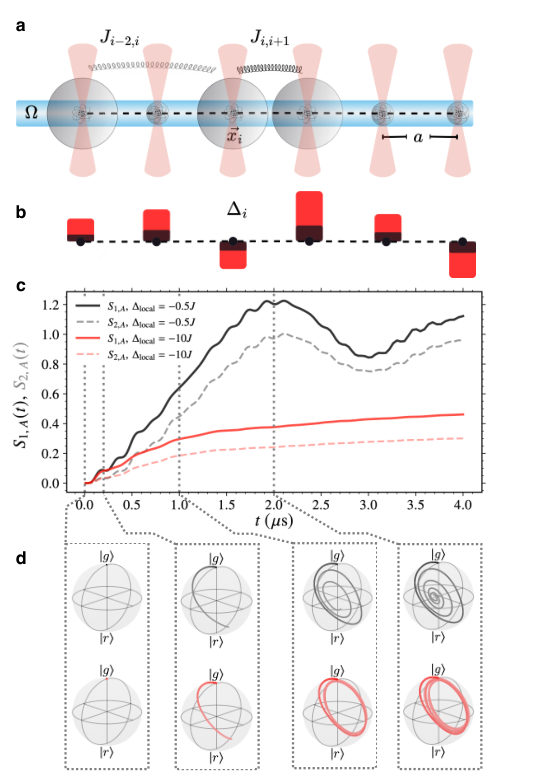
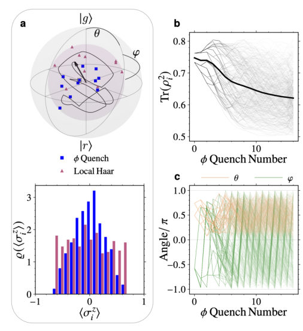
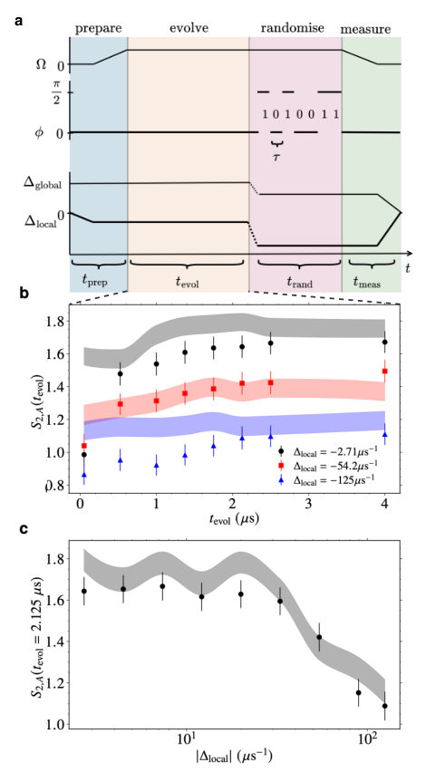
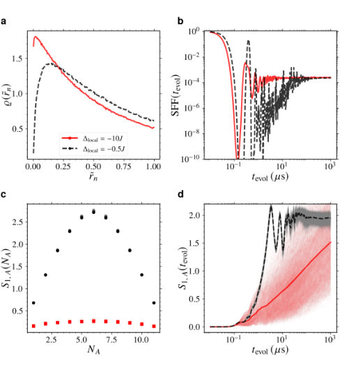
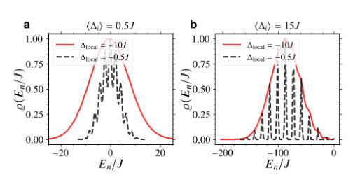
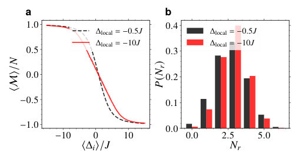
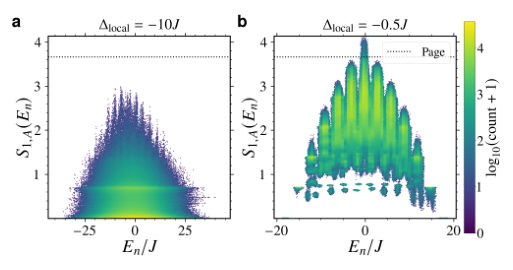

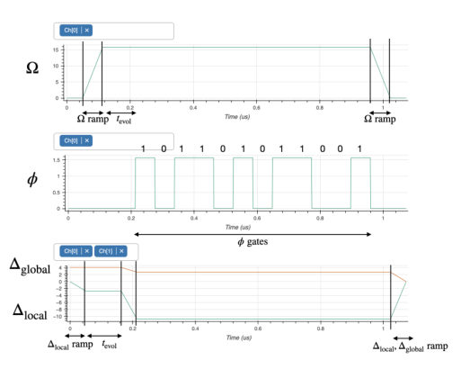
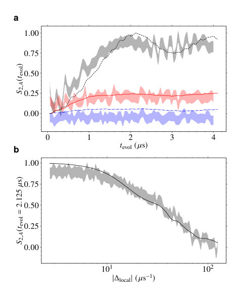
176 papers · 99 relevant · 6 highlighted
Every paper with at least one nonzero topic score, sorted by best-matching score. 🔥 marks scores ≥4/5. Click the title to jump to the full entry below; click [arXiv] to open the paper page. (secondary) marks papers from de-prioritized cond-mat archives.
Rydberg arrays 5/5 · 🔥 QC/QI experiment 4/5 · 🔥 analog quantum simulation 4/5 · 🔥 entanglement & information structure 4/5 · 🔥 non-equilibrium dynamics 4/5 · quantum measurements 3/5 · exotic spin models in light-matter 2/5 · measurement-induced transitions 2/5 · non-equilibrium universality 2/5 · scars & prethermalization 2/5scars & prethermalization 5/5 · 🔥 Rydberg arrays 4/5 · 🔥 non-equilibrium dynamics 4/5 · analog quantum simulation 3/5 · driven-dissipative phase transition 3/5 · entanglement & information structure 3/5 · exotic spin models in light-matter 3/5analog quantum simulation 4/5 · 🔥 driven-dissipative phase transition 4/5 · Tavis-Cummings & cavity-many-emitter 3/5 · correlated cavity matter 3/5 · exotic spin models in light-matter 3/5 · non-equilibrium dynamics 3/5 · non-equilibrium universality 3/5 · quantum optics experiment 3/5 · Keldysh / 2PI / non-Gaussian methods 2/5 · methods for driven-dissipative 2/5 · entanglement & information structure 1/5driven-dissipative phase transition 4/5 · 🔥 entanglement & information structure 4/5 · 🔥 measurement-induced transitions 4/5 · 🔥 non-equilibrium universality 4/5 · non-equilibrium dynamics 3/5 · methods for driven-dissipative 2/5 · quantum measurements 2/5(secondary) — 🔥 driven-dissipative phase transition 4/5 · 🔥 non-equilibrium dynamics 4/5 · 🔥 quantum optics experiment 4/5 · Keldysh / 2PI / non-Gaussian methods 3/5 · methods for driven-dissipative 3/5 · non-equilibrium universality 3/5quantum measurements 4/5 · correlated / nonlocal dissipation 3/5 · driven-dissipative phase transition 3/5 · entanglement & information structure 3/5 · methods for driven-dissipative 3/5 · measurement-induced transitions 2/5 · non-equilibrium dynamics 2/5driven-dissipative phase transition 4/5 · entanglement & information structure 3/5 · methods for driven-dissipative 3/5 · non-equilibrium dynamics 3/5 · Keldysh / 2PI / non-Gaussian methods 2/5 · correlated / nonlocal dissipation 2/5 · non-equilibrium universality 2/5QC/QI experiment 4/5 · 🔥 quantum optics experiment 4/5 · quantum measurements 3/5 · entanglement & information structure 2/5 · interference shaping light 2/5(secondary) — 🔥 QC/QI experiment 4/5 · 🔥 quantum optics experiment 4/5 · quantum measurements 3/5 · spintronics-quantum-optics interface 3/5driven-dissipative phase transition 4/5 · 🔥 non-equilibrium dynamics 4/5 · non-equilibrium universality 3/5 · quantum measurements 2/5non-equilibrium dynamics 4/5 · driven-dissipative phase transition 3/5 · entanglement & information structure 2/5 · non-equilibrium universality 2/5 · quantum measurements 2/5Rydberg arrays 4/5 · analog quantum simulation 3/5 · entanglement & information structure 3/5 · exotic spin models in light-matter 3/5QC/QI experiment 4/5 · 🔥 quantum optics experiment 4/5 · quantum measurements 3/5 · interference shaping light 2/5non-equilibrium dynamics 4/5 · driven-dissipative phase transition 3/5 · methods for driven-dissipative 3/5 · entanglement & information structure 2/5QC/QI experiment 4/5 · 🔥 quantum optics experiment 4/5 · quantum measurements 2/5 · spintronics-quantum-optics interface 2/5QC/QI experiment 4/5 · 🔥 spintronics-quantum-optics interface 4/5 · non-equilibrium dynamics 2/5 · quantum measurements 2/5QC/QI experiment 4/5 · 🔥 quantum optics experiment 4/5 · entanglement & information structure 2/5 · quantum measurements 2/5methods for driven-dissipative 4/5 · non-equilibrium dynamics 3/5 · driven-dissipative phase transition 2/5 · entanglement & information structure 2/5(secondary) — 🔥 spintronics-quantum-optics interface 4/5 · QC/QI experiment 3/5 · correlated / nonlocal dissipation 2/5 · quantum measurements 2/5QC/QI experiment 4/5 · non-equilibrium dynamics 2/5 · quantum measurements 2/5 · quantum optics experiment 2/5QC/QI experiment 4/5 · 🔥 quantum optics experiment 4/5 · interference shaping light 2/5QC/QI experiment 4/5 · spintronics-quantum-optics interface 3/5 · quantum optics experiment 2/5spintronics-quantum-optics interface 4/5 · interference shaping light 3/5 · methods for driven-dissipative 2/5spintronics-quantum-optics interface 4/5 · QC/QI experiment 3/5 · quantum measurements 2/5quantum measurements 4/5 · entanglement & information structure 2/5 · methods for driven-dissipative 2/5QC/QI experiment 4/5 · entanglement & information structure 2/5 · non-equilibrium dynamics 2/5entanglement & information structure 4/5 · 🔥 non-equilibrium dynamics 4/5QC/QI experiment 4/5 · 🔥 quantum optics experiment 4/5non-equilibrium dynamics 4/5 · analog quantum simulation 2/5 · exotic spin models in light-matter 2/5analog quantum simulation 4/5 · exotic spin models in light-matter 3/5QC/QI experiment 4/5 · quantum measurements 3/5quantum optics experiment 4/5 · QC/QI experiment 3/5QC/QI experiment 4/5 · quantum optics experiment 2/5quantum measurements 4/5 · entanglement & information structure 2/5methods for driven-dissipative 4/5 · non-equilibrium dynamics 2/5methods for driven-dissipative 4/5QC/QI experiment 4/5(secondary) — 🔥 spintronics-quantum-optics interface 4/5QC/QI experiment 4/5QC/QI experiment 4/5entanglement & information structure 3/5 · non-equilibrium dynamics 3/5 · Keldysh / 2PI / non-Gaussian methods 2/5 · correlated / nonlocal dissipation 2/5 · methods for driven-dissipative 2/5methods for driven-dissipative 3/5 · correlated / nonlocal dissipation 2/5 · driven-dissipative phase transition 2/5 · entanglement & information structure 2/5 · non-equilibrium dynamics 2/5methods for driven-dissipative 3/5 · Tavis-Cummings & cavity-many-emitter 2/5 · driven-dissipative phase transition 2/5 · non-equilibrium dynamics 2/5 · non-equilibrium universality 2/5methods for driven-dissipative 3/5 · non-equilibrium dynamics 3/5 · entanglement & information structure 2/5 · quantum measurements 2/5methods for driven-dissipative 3/5 · non-equilibrium dynamics 3/5 · correlated / nonlocal dissipation 2/5 · entanglement & information structure 2/5entanglement & information structure 3/5 · correlated / nonlocal dissipation 2/5 · non-equilibrium dynamics 2/5 · quantum measurements 2/5interference shaping light 3/5 · quantum optics experiment 3/5 · QC/QI experiment 2/5non-equilibrium dynamics 3/5 · non-equilibrium universality 3/5methods for driven-dissipative 3/5 · quantum measurements 3/5(secondary) — spintronics-quantum-optics interface 3/5 · QC/QI experiment 2/5QC/QI experiment 3/5 · methods for driven-dissipative 2/5(secondary) — non-equilibrium dynamics 3/5 · spintronics-quantum-optics interface 2/5quantum measurements 3/5 · Keldysh / 2PI / non-Gaussian methods 2/5entanglement & information structure 3/5 · Frenkel-Kontorova 2/5(secondary) — entanglement & information structure 3/5 · Keldysh / 2PI / non-Gaussian methods 2/5quantum measurements 3/5 · entanglement & information structure 2/5non-equilibrium dynamics 3/5 · non-equilibrium universality 2/5Rydberg arrays 3/5quantum measurements 3/5entanglement & information structure 3/5correlated / nonlocal dissipation 2/5 · quantum measurements 2/5 · spintronics-quantum-optics interface 2/5QC/QI experiment 2/5 · quantum optics experiment 2/5 · spintronics-quantum-optics interface 1/5analog quantum simulation 2/5 · interference shaping light 2/5analog quantum simulation 2/5 · non-equilibrium dynamics 2/5(secondary) — quantum optics experiment 2/5 · spintronics-quantum-optics interface 2/5(secondary) — driven-dissipative phase transition 2/5 · non-equilibrium dynamics 2/5(secondary) — Keldysh / 2PI / non-Gaussian methods 2/5 · non-equilibrium dynamics 2/5non-equilibrium dynamics 2/5 · non-equilibrium universality 2/5QC/QI experiment 2/5 · Rydberg arrays 1/5 · quantum measurements 1/5correlated / nonlocal dissipation 2/5 · entanglement & information structure 2/5QC/QI experiment 2/5 · quantum optics experiment 2/5non-equilibrium dynamics 2/5 · non-equilibrium universality 2/5analog quantum simulation 2/5 · methods for driven-dissipative 2/5quantum measurements 2/5methods for driven-dissipative 2/5QC/QI experiment 2/5entanglement & information structure 2/5(secondary) — non-equilibrium dynamics 2/5Keldysh / 2PI / non-Gaussian methods 2/5Keldysh / 2PI / non-Gaussian methods 2/5entanglement & information structure 2/5entanglement & information structure 2/5entanglement & information structure 2/5(secondary) — non-equilibrium dynamics 2/5methods for driven-dissipative 2/5QC/QI experiment 2/5entanglement & information structure 2/5spintronics-quantum-optics interface 2/5Keldysh / 2PI / non-Gaussian methods 2/5methods for driven-dissipative 2/5Keldysh / 2PI / non-Gaussian methods 2/5methods for driven-dissipative 2/5entanglement & information structure 2/5entanglement & information structure 2/5spintronics-quantum-optics interface 2/5(secondary) — non-equilibrium dynamics 2/5analog quantum simulation 2/5Kondo & dissipative impurity 1/5quantum measurements 1/5Papers by authors on your watch list. Click the title to jump to the full entry below; click [arXiv] to open the paper page.
Papers from quant-ph and your primary cond-mat archives (quant-gas, stat-mech, str-el, dis-nn). Highlighted papers (⭐) come first, then everything else sorted by topic-relevance score, highest first.
Highlighted author(s): Andrew J. Daley
Authors: Apollonas S. Matsoukas-Roubeas, Oscar Scholin, Lucas Sá, Arinjoy De, Majd Hamdan, Alexei Bylinskii, Andrew J. Daley, Dorian A. Gangloff
Type: both · Category: other · PDF: https://arxiv.org/pdf/2604.24854v1
Analysis basis: full PDF text, analyzed in chunks
Topic relevance: 🔥 Rydberg arrays 5/5 · 🔥 QC/QI experiment 4/5 · 🔥 analog quantum simulation 4/5 · 🔥 entanglement & information structure 4/5 · 🔥 non-equilibrium dynamics 4/5 · quantum measurements 3/5 · exotic spin models in light-matter 2/5 · measurement-induced transitions 2/5 · non-equilibrium universality 2/5 · scars & prethermalization 2/5









Main problem. Measuring entanglement dynamics and the transition from quantum chaos to many-body localization (MBL) in analog quantum simulators that lack universal local gate control.
Main result. The authors demonstrate a randomized measurement protocol using global controls and local detuning to extract Rényi entropy, successfully resolving the transition from linear to logarithmic entanglement growth in a neutral-atom processor.
Method. A modified randomized measurement toolbox using a phi-quench protocol (switching between non-commuting Hamiltonians) to approximate local rotations, combined with numerical simulations to account for decoherence and readout errors.
Summary. This paper presents a new method for measuring entanglement in analog quantum simulators using only global controls and local energy tuning. Using the QuEra Aquila neutral-atom processor, the authors demonstrate that they can observe the transition from a quantum chaotic regime to a many-body localized regime. The protocol bypasses the need for local single-qubit gates by using a sequence of phase quenches. The results show distinct entanglement growth patterns (linear vs. logarithmic) that match numerical predictions even in the presence of noise.
Model / system. A 1D chain of Rydberg atoms (N=6 to N=12) in the QuEra Aquila platform, governed by a long-range interacting transverse-field Ising model with programmable local and global detuning.
Key observables. Second-order Rényi entropy (S2,A), von Neumann entropy (S1,A), subsystem purity, level spacing ratio (r-parameter), and Spectral Form Factor (SFF).
Important parameters / regimes. Rabi frequency (Omega), local detuning (Delta_local), global detuning (Delta_global), and interaction strength (J).
Assumptions / limitations. The system is small-scale (N=6) to stay within coherence times; the protocol assumes the phi-quench sequence effectively approximates a 2-design.
Figures summary. Fig 1: Schematic of the atom array and Hamiltonian parameters. Fig 2: Validation of the randomized rotation protocol via Bloch vector trajectories. Fig 3: Experimental entanglement growth across low, moderate, and high disorder regimes. Fig 4: Numerical signatures of the transition (level statistics and SFF).
Paper structure. Introduction to entanglement dynamics and MBL; description of the hardware and Hamiltonian; development of the global-to-local randomized measurement protocol; experimental implementation on Aquila; results showing the disorder-induced transition; and error analysis/numerical validation.
Why it may be interesting. It provides a practical way to perform complex many-body measurements (like Rényi entropy) on analog hardware that lacks the high-fidelity local gates required by standard randomized measurement toolboxes, bridging the gap between analog simulation and quantum information protocols.
The development and spread of entanglement in complex quantum systems is central to exploring many-body phenomena out of equilibrium. Measuring entanglement dynamics can shed light on information scrambling and thermalisation, namely on transitions from many-body quantum chaos to localisation in disordered, interacting systems. In quantum computing systems, entanglement entropy and other nonlinear functions of the density matrix have been recently measured, in particular by using the randomised measurement toolbox. However, it is difficult to implement the required arbitrary unitary rotations on specific subsystems without universal local control. Here we devise and demonstrate the measurement of entanglement entropy in a programmable analogue quantum simulator using a randomised measurement protocol that leverages local energy tuning together with a global field to bypass the need for local gate control. We implement this on a commercially available neutral-atom quantum simulator, QuEra's Aquila, and use it to show how programmable disorder in the local Hamiltonian parameters leads to a transition from chaotic to localised entanglement dynamics. Given current decoherence times, we clearly resolve disorder-specific, time-dependent entanglement spreading in small systems. Our work extends the utility of programmable analogue quantum simulators, and opens further opportunities for wider randomised measurement toolboxes in a range of other analogue systems.
Highlighted author(s): Aashish A. Clerk
Authors: Sihan Chen, Aashish A. Clerk
Type: theory · Category: statistical mechanics · PDF: https://arxiv.org/pdf/2604.25864v1
Analysis basis: full PDF text, analyzed in chunks
Topic relevance: 🔥 driven-dissipative phase transition 4/5 · entanglement & information structure 3/5 · methods for driven-dissipative 3/5 · non-equilibrium dynamics 3/5 · Keldysh / 2PI / non-Gaussian methods 2/5 · correlated / nonlocal dissipation 2/5 · non-equilibrium universality 2/5
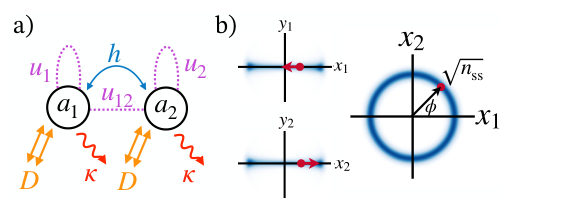
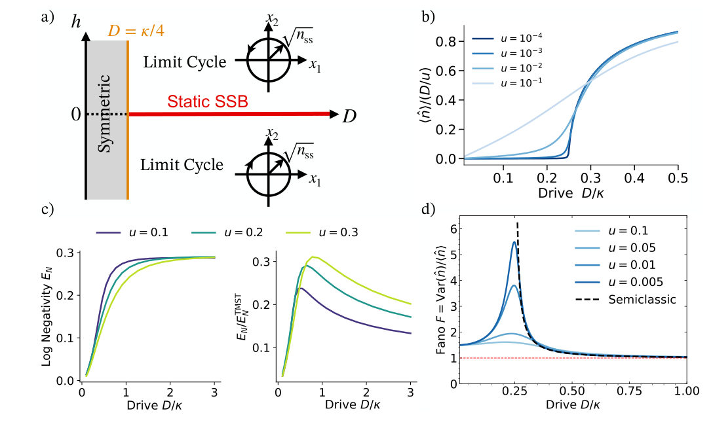
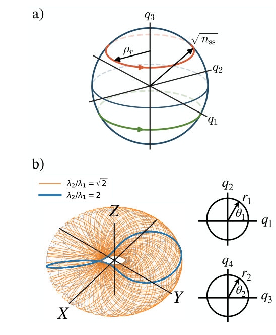
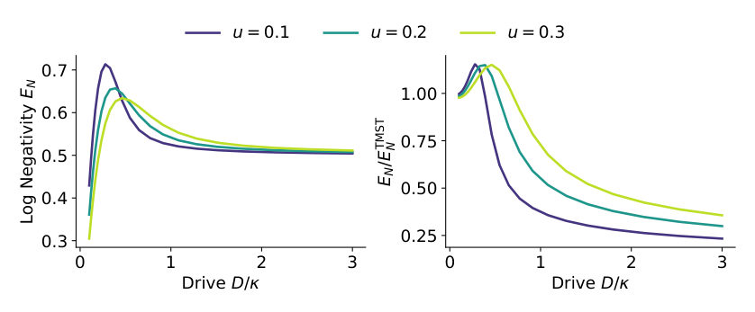
Main problem. The paper addresses the fundamental tension between using coherent driving to minimize noise and maintaining continuous internal symmetries in driven-dissipative quantum systems. It seeks to realize quantum limit cycles with continuous symmetries that are robust and exhibit reduced phase noise.
Main result. The authors identify a class of multi-mode bosonic models with O(N) symmetry that can be exactly solved, demonstrating that coherent parametric driving can yield symmetry-enriched limit cycles with phase noise suppression below the Schawlow-Townes limit.
Method. The study employs a combination of exact analytical solutions via a 2N-mode purification method, semiclassical analysis using Langevin equations, and a mechanical analogy mapping quadrature dynamics to a particle in a potential.
Summary. This paper presents a new class of multi-mode bosonic models that realize quantum limit cycles with continuous O(N) symmetries using coherent parametric driving. By using coherent rather than incoherent driving, the authors show that phase noise can be suppressed below the standard Schawlow-Townes limit. The models are exactly solvable, allowing for a precise study of steady-state entanglement and the emergence of quantum limit tori. The findings are applicable to experimental platforms like superconducting circuits and quantum optics.
Model / system. A multi-mode bosonic system featuring Kerr-type nonlinearities, subject to resonant parametric (two-photon) driving and single-photon loss, compatible with superconducting circuits and quantum optical setups.
Key observables. Steady-state entanglement (log-negativity), phase diffusion coefficient, Fano ratio, photon number, and the existence of quantum limit tori.
Important parameters / regimes. Kerr nonlinearity (u), parametric drive amplitude (D), photon loss rate (kappa), and antisymmetric coupling strength (h).
Assumptions / limitations. The analysis of phase-locking assumes a weak symmetry-breaking term; the semiclassical Fano ratio is valid in the limit cycle phase.
Figures summary. Figures show log-negativity and its ratio to a thermal squeezed state as a function of drive strength, and the behavior of the Fano ratio across different regimes.
Paper structure. The paper introduces the problem of noise-symmetry trade-offs, presents the O(N) symmetric model and its exact solution, performs semiclassical stability and noise analysis, explores higher-dimensional limit tori, and concludes with the effects of symmetry-breaking perturbations.
Why it may be interesting. It provides a unified framework for understanding how coherent driving can achieve high-precision quantum oscillations with reduced phase noise and non-Gaussian entanglement, which is highly relevant for quantum optics and open quantum systems.
There is widespread interest in many-body quantum systems that exhibit limit-cycle or time-crystalline behaviour. An ideal quantum limit cycle would be realized using fully coherent driving (to minimize noise) and also have a continuous internal symmetry (to ensure generation of monochromatic radiation). While these two requirements may seem incompatible, we introduce in this work a large class of multi-mode bosonic limit cycle models based on coherent parametric driving which possess an O(N) continuous symmetry. Surprisingly, the full quantum dissipative steady state of these models can be found exactly. They exhibit rich physics, including steady state entanglement, reduced phase diffusion and the possibility of realizing quantum limit tori. The basic mechanism we identify provides a unified way to understand how coherent parametric driving can yield symmetry-enriched limit cycles, and also helps us understand related models where the relevant symmetries are weakly broken. The models we study are compatible with a range of different experimental platforms, including quantum optical setups and superconducting quantum circuits.
Highlighted author(s): Igor Lesanovsky
Authors: Mario Boneberg, Simon Kochsiek, Igor Lesanovsky
Type: theory · Category: quantum information and computing · PDF: https://arxiv.org/pdf/2604.24886v1
Analysis basis: full PDF text, analyzed in chunks
Topic relevance: 🔥 methods for driven-dissipative 4/5 · non-equilibrium dynamics 3/5 · driven-dissipative phase transition 2/5 · entanglement & information structure 2/5
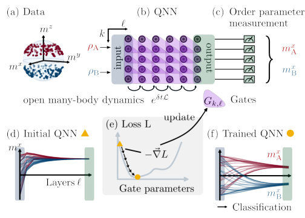
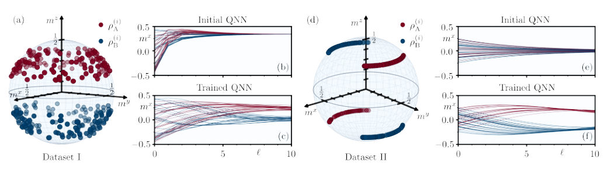
Main problem. The difficulty of scaling Quantum Neural Networks (QNNs) due to exponentially large Hilbert spaces, barren plateaus, and measurement noise in the NISQ era.
Main result. The development of physics-informed QNNs that use dissipative many-body dynamics to successfully classify quantum states and reduce the complexity of required observables.
Method. Tensor network simulations (MPS and MPO) are used to train the network via a Nadam stochastic gradient descent variant using a contrastive loss function.
Summary. This paper proposes a new class of physics-informed quantum neural networks designed for large-scale hardware. By mimicking the dissipative dynamics of open many-body systems, these networks can learn to classify complex quantum states using only a single observable. The approach effectively addresses the challenges of barren plateaus and measurement noise. Simulations on systems up to 550 qubits demonstrate that the network can reduce the complexity of tasks by mapping multi-observable problems into a single-observable measurement.
Model / system. A large-scale layered quantum many-body system on a rectangular lattice, where evolution is modeled via a Lindblad master equation with parameterized Hamiltonian and jump operators.
Key observables. Magnetization (specifically the x-component, m_x) used as an order parameter for classification.
Important parameters / regimes. System size up to 550 qubits (50 sites, 11 layers), learning rate 0.05, and 5000-shot measurement scale.
Assumptions / limitations. The use of SVD truncation in tensor networks is assumed to capture the essential physics without qualitatively altering the training results.
Figures summary. Figure 1 illustrates the QNN architecture and the training process from untrained to trained states; Figure 2 shows the mapping of input datasets to distinct magnetization ranges; Supplementary figures demonstrate the convergence of bond dimensions and the stability of training losses.
Paper structure. The paper introduces the QNN scaling challenge, describes the physics-informed architecture based on Lindbladian dynamics, presents training results on two distinct datasets, and provides a validation of the numerical methods via tensor network truncation analysis.
Why it may be interesting. It bridges quantum machine learning with open quantum systems, showing how dissipative many-body dynamics can be leveraged to create robust, noise-resilient architectures for feature extraction.
Quantum neural networks generalize classical artificial neural networks into the quantum domain. They are formulated as parameterized quantum circuits which are optimized by measuring and minimizing a suitably chosen loss function. The core challenge in understanding, implementing and ultimately using quantum neural networks is that they represent many-body systems with an exponentially large Hilbert space, in combination with a large parameter search space. Moreover, noise -- which is inherent to any quantum measurement -- sets practical limits for the estimation of training loss. Here, we study physics-informed large-scale quantum neural networks that are trained through a finite number of noisy loss function measurements. We show that this architecture permits the construction of nontrivial decision boundaries that enable the classification of quantum states through measuring an order parameter. Our approach can directly process quantum data that is output from quantum simulators and computers and is well suited for implementation on current hardware. Moreover, owed to a close link between the neural network dynamics and the evolution of Markovian open many-body quantum systems, one may expect a certain robustness to noise, which is ubiquitous in the current NISQ era.
Highlighted author(s): Sebastian Diehl
Authors: Ze-Min Huang, Sebastian Diehl
Type: theory · Category: strongly correlated electrons · PDF: https://arxiv.org/pdf/2604.24872v1
Analysis basis: full PDF text, analyzed in chunks
Topic relevance: methods for driven-dissipative 3/5 · correlated / nonlocal dissipation 2/5 · driven-dissipative phase transition 2/5 · entanglement & information structure 2/5 · non-equilibrium dynamics 2/5
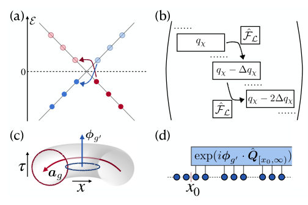
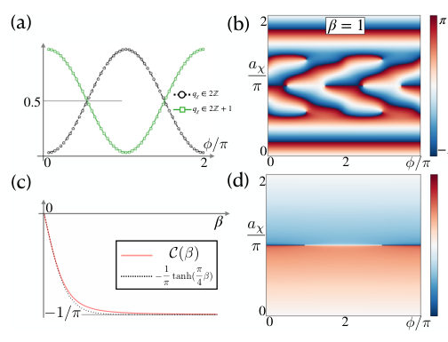
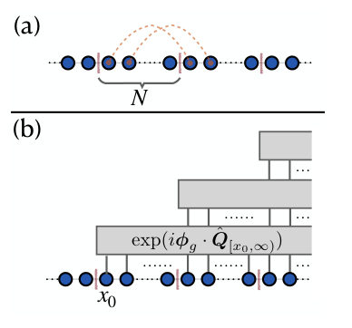
Main problem. The paper addresses the failure of traditional 't Hooft anomaly formulations and spectral flow mechanisms when applied to mixed states, where charge exchange with the environment and state impurity invalidate standard diagnostics.
Main result. The authors derive a universal 'symmetry-charge flow' for Abelian symmetries, which generalizes spectral flow to mixed states by describing how applied fields redistribute statistical weight across symmetry-resolved charge sectors.
Method. The study employs an algebraic approach using flux-insertion operators and large gauge transformations, supplemented by tensor network formalisms (MPS/MPO/PEPS) and K-matrix effective field theories.
Summary. This paper resolves the problem of non-universal anomalies in mixed states by introducing the concept of symmetry-charge flow. Unlike traditional spectral flow, which relies on ground-state level crossings, symmetry-charge flow describes the redistribution of charge sectors in a density matrix under flux insertion. This mechanism is shown to be universal for both bosonic and fermionic systems and is insensitive to temperature or state purity. The work establishes a deep link between mixed-state anomalies and the presence of long-range entanglement.
Model / system. The analysis covers (1+1)-dimensional systems, including tight-binding staggered fermion models with $U(1)$ and chiral symmetries, and $Z_2$ symmetric spin chains, as well as 2D SPT phases represented by PEPS.
Key observables. Symmetry-charge flow, anomaly coefficients, chiral current non-conservation, and the 3-cocycle phase.
Important parameters / regimes. Temperature (inverse temperature beta), spatial and temporal fluxes, and the K-matrix for bosonic theories.
Assumptions / limitations. The derivation for 2D reduced density matrices assumes the system is at an RG fixed point; results are primarily focused on Abelian symmetries.
Figures summary. Figure 1 illustrates spectral flow vs. symmetry-charge flow and flux-insertion; Figure 2 shows sector exchange in fermion models; Figure 3 depicts the construction of flux-threaded periodic chains.
Paper structure. The paper begins by identifying the breakdown of pure-state anomalies in mixed states, introduces the algebraic flux-insertion framework, provides numerical verification in fermion and spin models, proves the connection to long-range entanglement, and extends the results to 2D SPT phases using tensor networks.
Why it may be interesting. This is highly relevant for many-body dynamics and open quantum systems because it provides a robust, state-independent diagnostic for topological properties that remains valid even when a system is coupled to an environment or at finite temperature.
The $(1+1)$-dimensional chiral anomaly is a paradigmatic exact result in quantum field theory, traditionally formulated for zero-temperature pure states where it arises from spectral flow induced by external gauge fields and captures universal ground-state properties. In mixed states, however, the participation of many states and charge exchange with the environment invalidate this mechanism. Naive extensions yield model-dependent anomaly coefficients, calling its universality into question. Here, we resolve this problem for Abelian symmetries by deriving the anomaly from an algebraic relation between the symmetry and its flux-insertion operator. We obtain symmetry-charge flow, a mixed-state generalization of spectral flow, in which an applied field redistributes statistical weight across symmetry-resolved charge sectors. Fixed solely by symmetry, the anomaly restores universality and applies to both pure and mixed states in fermionic and bosonic systems. We substantiate these results in tight-binding fermionic models with continuous symmetry and in spin models with discrete symmetries.
Highlighted author(s): Johannes Knolle
Authors: Wan Tong Lou, Gino Cassella, Andres Perez Fadon, Halvard Sutterud, David Pfau, James S. Spencer, Johannes Knolle, W. M. C. Foulkes
Type: theory · Category: quantum gases · PDF: https://arxiv.org/pdf/2604.24883v1
Analysis basis: full PDF text, analyzed in chunks
Topic relevance: analog quantum simulation 2/5
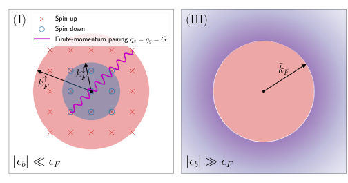
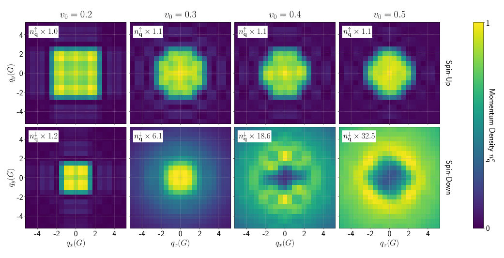
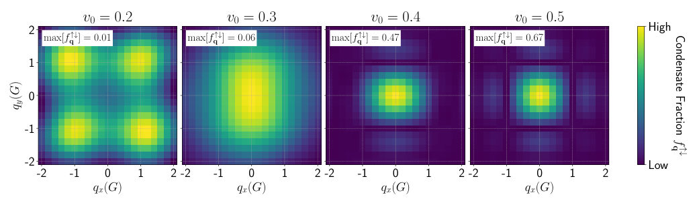
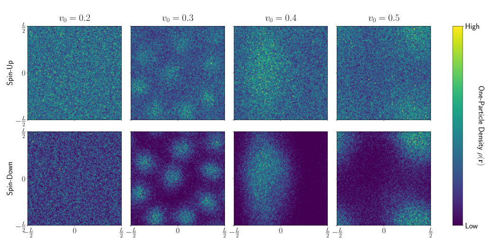
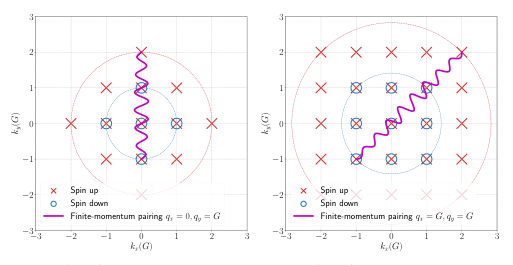
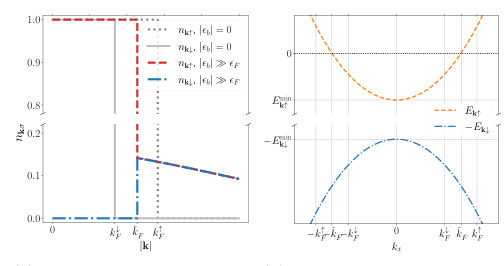
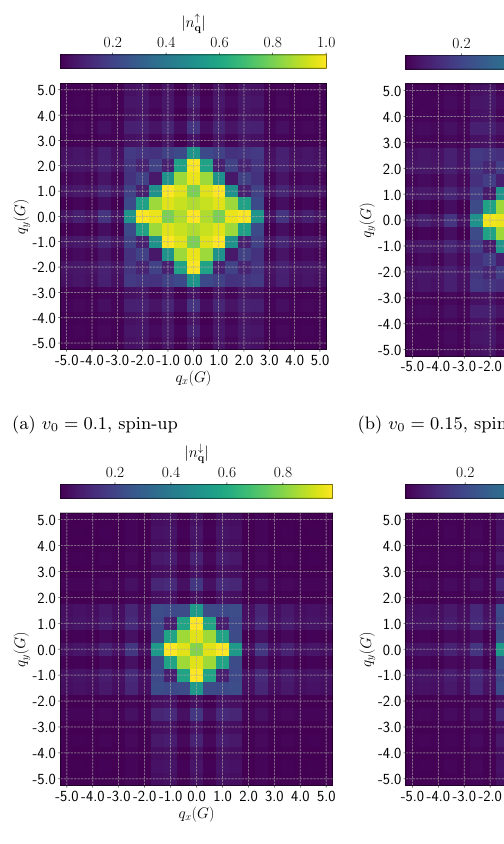
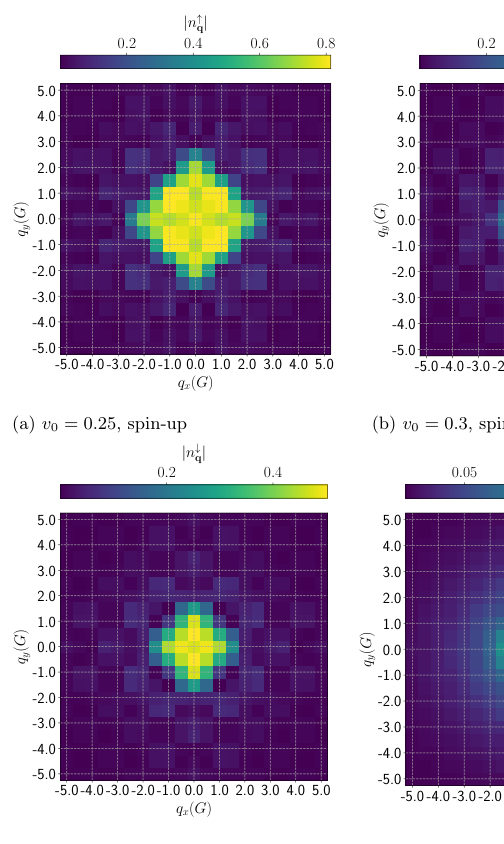
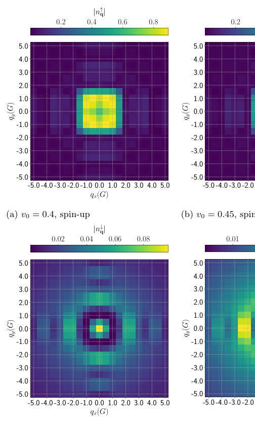
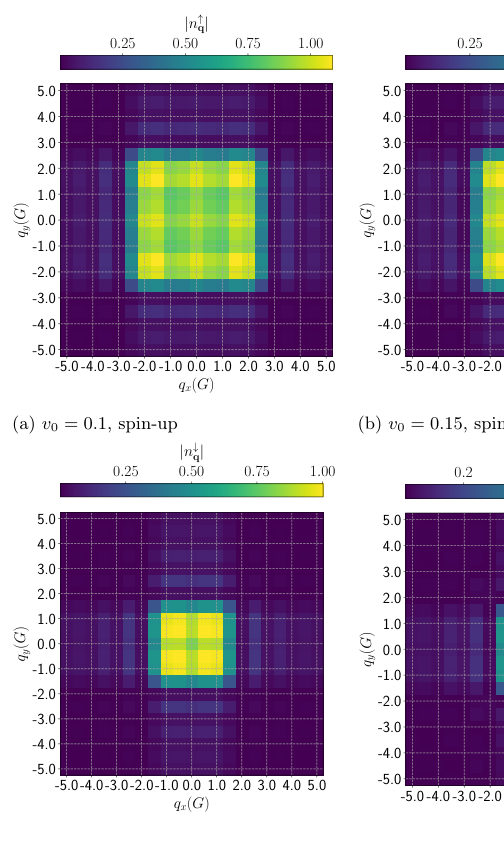
Main problem. Investigating the zero-temperature phase diagram and exotic paired states of a 2D spin-imbalanced Fermi gas across the BCS-BEC crossover.
Main result. The study identifies three distinct regimes: an FFLO phase in the weak-interaction BCS limit, a new crystalline phase of Cooper pairs in the intermediate regime, and a phase-separated Bose-Fermi mixture in the strong-interaction BEC limit.
Method. Neural Network Variational Monte Carlo using the AGPs FermiNet Ansatz, optimized via JAX-based KFAC gradient descent.
Summary. This paper explores the phase diagram of a 2D spin-imbalanced Fermi gas using neural network-based quantum Monte Carlo. It reveals the existence of an exotic crystalline phase of Cooper pairs at intermediate interaction strengths, situated between the FFLO phase and a phase-separated BEC limit. The work demonstrates how neural wave functions can capture complex correlations and spontaneous symmetry breaking in strongly interacting many-body systems.
Model / system. A 2D spin-imbalanced Fermi gas with short-ranged attractive interactions, modeled using a modified Pöschl-Teller potential in a periodic square box.
Key observables. Momentum density (spin-resolved), condensate fraction, one-particle real-space density, two-body density matrix, and pairing energy.
Important parameters / regimes. Interaction strength (v0), scattering length parameter (eta), and spin imbalance (N_up/N_down ratio).
Assumptions / limitations. The study is subject to finite-size effects due to the small number of particles simulated, though the phase diagram is argued to be qualitatively robust.
Figures summary. Figures show momentum density evolution, condensate fraction across the crossover, and real-space density maps illustrating the formation of a crystalline lattice and phase separation.
Paper structure. The paper introduces the physical problem and model, describes the Neural Network VMC methodology, presents the results across three interaction regimes (BCS, crossover, BEC), and discusses the physical origins of the observed phases.
Why it may be interesting. It uses advanced machine learning architectures (FermiNet) to discover a previously unpredicted crystalline phase in a purely attractive system, driven by emergent effective repulsion.
We study the zero-temperature phase diagram of the 2D spin-imbalanced Fermi gas with short-ranged attractive interactions using the recently developed neural network variational Monte Carlo method with the AGPs FermiNet Ansatz. The Fulde-Ferrell-Larkin-Ovchinnikov phase is observed in the weakly interacting BCS limit and a polarised superfluid is seen in the strongly interacting BEC limit. When the interactions are strong, the minority-spin momentum density is reduced almost to zero in the momentum-space region occupied by the unpaired majority-spin electrons. When the interactions are very strong, phase separation occurs, with regions containing bosonic pairs and unpaired regions occupied by the remaining majority-spin particles. In addition, we observe translational symmetry breaking at intermediate interaction strengths, where the system forms an exotic crystal of Cooper pairs in a Fermi fluid of unpaired majority-spin particles. We provide a possible explanation for the formation of the crystalline phase, explain the origins of the k-space momentum-density hole when the pairs are tightly bound, and discuss how our approach opens new directions for future work.
Highlighted author(s): Johannes Knolle
Authors: Markus Drescher, Laurens Vanderstraeten, Roderich Moessner, Frank Pollmann, Johannes Knolle
Type: theory · Category: strongly correlated electrons · PDF: https://arxiv.org/pdf/2604.24868v1
Analysis basis: full PDF text, analyzed in chunks
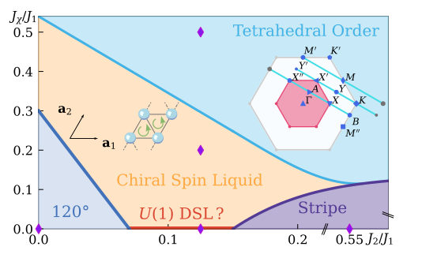
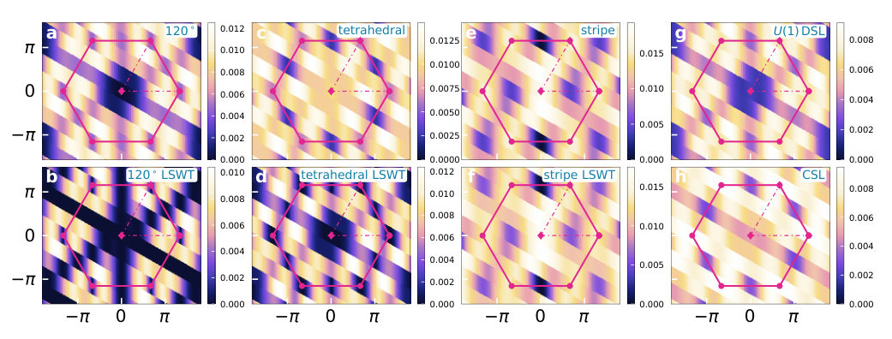
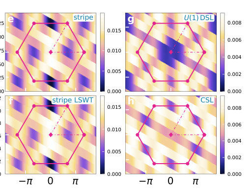
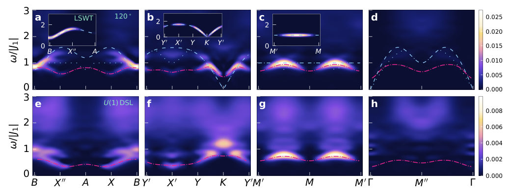

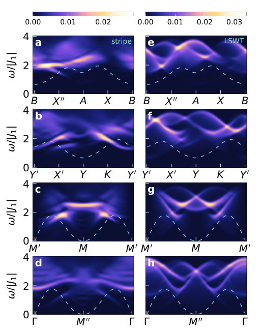
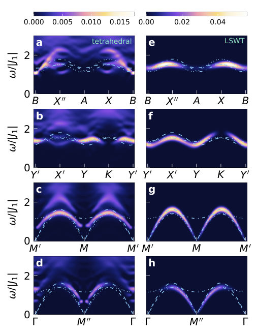
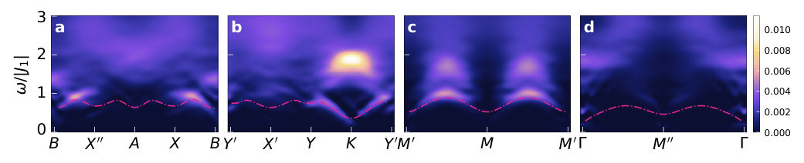
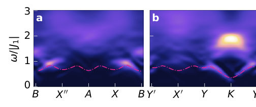
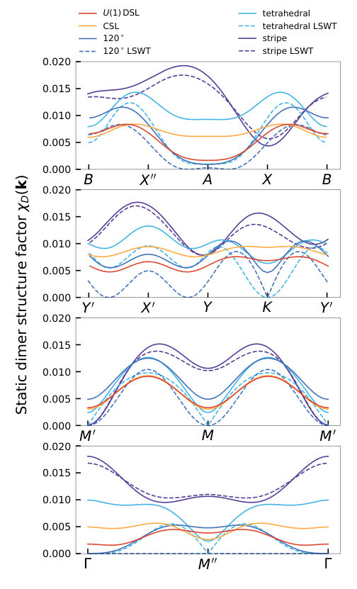
Main problem. The study aims to resolve the spin-singlet excitation spectrum in frustrated quantum magnets, which is difficult to probe using standard spin structure factors, to better understand candidate quantum spin liquid (QSL) phases.
Main result. The researchers identify low-energy modes in ordered phases due to avoided quasiparticle decay and find evidence for gapless singlet monopole excitations in the U(1) Dirac spin liquid phase at the X points of the Brillouin zone.
Method. Large-scale GPU-accelerated Matrix-Product-State (MPS) simulations using iDMRG and time evolution, supplemented by Linear Spin-Wave Theory (LSWT) for comparison.
Summary. This paper investigates the dynamical dimer structure factor in the triangular-lattice Heisenberg antiferromagnet to distinguish between various magnetic phases. Using high-resolution GPU-accelerated tensor network simulations, the authors probe spin-singlet excitations that are otherwise invisible in standard spin-spin correlations. They provide evidence for singlet monopole excitations in the U(1) Dirac spin liquid and observe avoided quasiparticle decay in ordered phases. The results serve as a theoretical guide for future experimental studies using techniques like RIXS.
Model / system. An extended spin-1/2 Heisenberg antiferromagnet on a triangular lattice, including nearest-neighbor (J1), next-nearest-neighbor (J2), and scalar chiral (Jchi) interactions.
Key observables. Dynamical dimer structure factor S^D(k, omega), static dimer structure factor, and spin structure factor.
Important parameters / regimes. Exchange couplings J1, J2, and Jchi; bond dimension chi = 2000; YC6 cylinder geometry.
Assumptions / limitations. The study is subject to finite-size effects due to the cylinder geometry, which prevents full resolution of the gapless continuum in the 2D limit.
Figures summary. Figures show the dynamical dimer structure factor for tetrahedral and stripe phases, comparisons between MPS and LSWT, the static dimer structure factor across various phases, and spatial configurations of tetrahedral spin order.
Paper structure. The paper introduces the problem of probing singlet sectors, describes the Hamiltonian and numerical MPS methods, presents results for ordered phases (120, stripe, tetrahedral) and QSL candidates (U(1) Dirac, chiral), compares findings with LSWT, and discusses experimental implications for RIXS and Raman scattering.
The dynamical dimer structure factor is an observable probing spin-singlet excitations of quantum magnets distinct from those commonly studied by the spin structure factor. We report the dimer response for the extended spin-$1/2$ antiferromagnetic Heisenberg model on the triangular lattice using large-scale GPU-accelerated matrix-product-state simulations. We investigate the ordered phases with $120^\circ$ coplanar, collinear stripe, and tetrahedral spin order, as well as candidate quantum spin-liquid (QSL) regimes, comprising an expected gapless $U(1)$ Dirac QSL and a chiral QSL at finite spin-scalar-chirality coupling. In the ordered phases, we find low-energy modes below the onset of the two-magnon continuum illustrating avoided quasiparticle decay. Within the candidate gapless QSL, we observe absolute dispersion minima at momenta of half the Brillouin zone corners, $X\equiv K/2$, in agreement with field-theory predictions that singlet monopole excitations of the $U(1)$ Dirac spin liquid become gapless at these points. Thus, the high-resolution dynamical dimer response provides support for a $U(1)$ Dirac QSL with singlet monopole excitations.
Authors: Saptadip Roy, Arnab Sen, Diptiman Sen, K. Sengupta
Type: theory · Category: other · PDF: https://arxiv.org/pdf/2604.24850v1
Analysis basis: full PDF text, analyzed in chunks
Topic relevance: 🔥 scars & prethermalization 5/5 · 🔥 Rydberg arrays 4/5 · 🔥 non-equilibrium dynamics 4/5 · analog quantum simulation 3/5 · driven-dissipative phase transition 3/5 · entanglement & information structure 3/5 · exotic spin models in light-matter 3/5
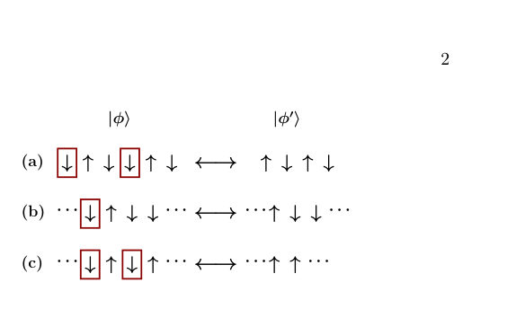
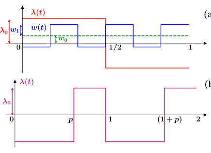
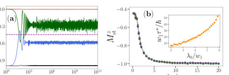
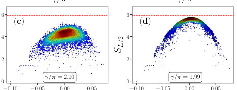
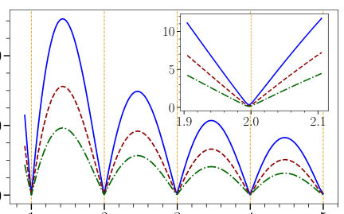
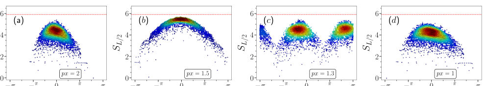
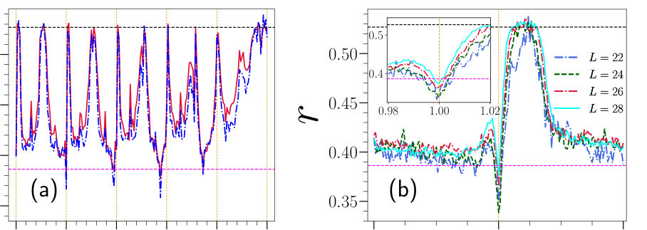
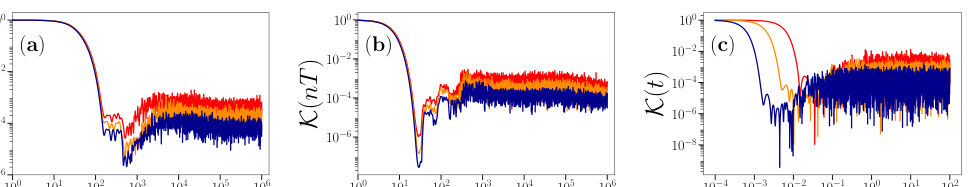
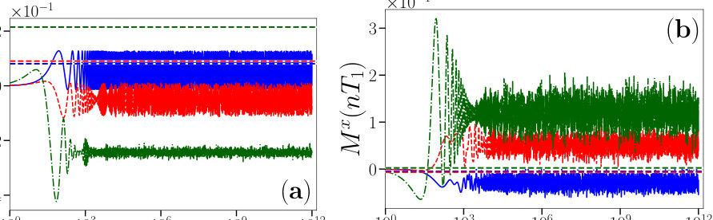
Main problem. Investigating the emergence of prethermal Bethe integrability in periodically driven Rydberg atom chains and identifying drive protocols that prevent rapid thermalization.
Main result. The authors identify specific drive protocols and frequencies where the Floquet Hamiltonian maps to an integrable XXZ spin chain, leading to an extensive number of approximately conserved charges and suppressed heating for exponentially long timescales.
Method. The study uses Floquet perturbation theory to derive effective Hamiltonians and exact diagonalization to analyze spectral statistics, entanglement entropy, and magnetization dynamics.
Summary. This paper explores how periodic driving can induce emergent integrability in a Rydberg atom chain. By using specific square-pulse driving protocols, the authors show that the system's effective Hamiltonian can be mapped to the integrable XXZ spin chain at certain frequencies. This leads to a prethermal regime where the system avoids thermalization and maintains conserved charges for extremely long periods. The findings are supported by both analytical mapping and numerical simulations of level statistics and entanglement.
Model / system. A one-dimensional chain of Rydberg atoms in the strong interaction limit, described by a PXP-like Hamiltonian with a Rydberg blockade constraint, subject to periodic driving (two-tone and asymmetric square pulse protocols).
Key observables. Level spacing ratio (r), half-chain entanglement entropy, longitudinal magnetization, and spectral form factor.
Important parameters / regimes. Drive frequency (omega), drive amplitude (lambda_0), phase accumulated during the drive (gamma), and the large drive amplitude regime (lambda_0 >> w_0, w_1).
Assumptions / limitations. The analysis primarily focuses on the large drive amplitude regime and assumes the validity of the Floquet expansion for high-frequency driving.
Figures summary. Figure 1 shows the drive protocols; Figure 2 illustrates the mapping between the constrained Rydberg chain and the unconstrained XXZ model; Figure 3 compares spectral form factors at different frequencies.
Paper structure. The paper introduces the driven Rydberg system, presents the analytical derivation of the effective Hamiltonian using Floquet perturbation theory, establishes the mapping to the XXZ model, and provides numerical verification through exact diagonalization of spectral and dynamical observables.
Why it may be interesting. It demonstrates a method to engineer integrability in non-integrable, constrained many-body systems via Floquet engineering, providing a way to control thermalization and preserve quantum information in Rydberg arrays.
We study a chain of periodically driven Rydberg atoms and identify a class of drive protocols for which the system exhibits emergent prethermal Bethe integrability at special drive frequencies. We provide a perturbative analytic expression of its Floquet Hamiltonian in the large drive amplitude regime. We demonstrate integrability of the leading term of this Floquet Hamiltonian at special drive frequencies, which we identify, by mapping it to the Hamiltonian of the paradigmatic spin-$1/2$ ${\rm XXZ}$ chain. We support our analytical results by exact diagonalization studies on finite chains. Our numerical results on level statistics, half-chain entanglement entropy, and longitudinal magnetization of the driven chain brings out its emergent integrable nature at the special drive frequencies which persists up to a large prethermal timescale.
Authors: Sylvain Ravets
Type: both · Category: quantum gases · PDF: https://arxiv.org/pdf/2604.25413v1
Analysis basis: full PDF text, analyzed in chunks
Topic relevance: 🔥 analog quantum simulation 4/5 · 🔥 driven-dissipative phase transition 4/5 · Tavis-Cummings & cavity-many-emitter 3/5 · correlated cavity matter 3/5 · exotic spin models in light-matter 3/5 · non-equilibrium dynamics 3/5 · non-equilibrium universality 3/5 · quantum optics experiment 3/5 · Keldysh / 2PI / non-Gaussian methods 2/5 · methods for driven-dissipative 2/5 · entanglement & information structure 1/5
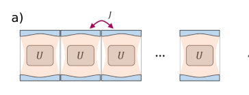
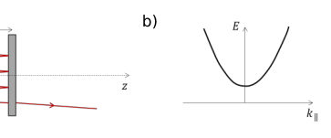
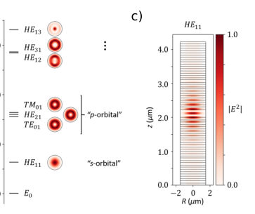
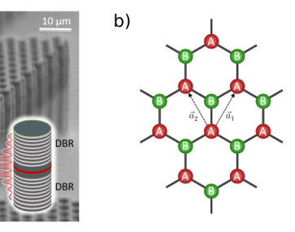
Main problem. The challenge of engineering and controlling new phases of matter, such as strongly correlated bosonic phases, by creating synthetic photonic materials in the solid state.
Main result. The paper demonstrates that exciton-polaritons in semiconductor microcavities can be arranged into periodic arrays to emulate the Bose-Hubbard model, providing a scalable platform for exploring many-body quantum physics.
Method. The work uses a combination of electromagnetic modeling (Maxwell equations), tight-binding approximations (LCAO), and the driven-dissipative Gross-Pitaevskii equation to describe both single-particle and many-body dynamics.
Summary. This paper reviews the development of synthetic polariton matter using semiconductor microcavities. By confining photons in cavities and coupling them to excitons, researchers can create hybrid quasiparticles with controllable mass and interactions. These particles can be arranged into artificial crystals to simulate complex quantum models like the Bose-Hubbard model. This platform offers a scalable way to explore strongly correlated bosonic phases and topological physics in a driven-dissipative environment.
Model / system. The primary system is exciton-polaritons in semiconductor microcavities (micropillars) which, when arranged in lattices, map onto the Bose-Hubbard model and the Jaynes-Cummings model.
Key observables. Photoluminescence signal, energy-momentum dispersion, photon statistics (second-order correlation function g2(0)), and spatial/temporal correlation functions.
Important parameters / regimes. Effective photon mass (m_ph), hopping amplitude (J), on-site interaction (U), Rabi splitting (Omega), and the ratio of interaction to linewidth (U/gamma).
Assumptions / limitations. The paraxial approximation for photon dispersion, the weak-guidance approximation for electromagnetic fields, and the treatment of excitons as bosons at low density.
Figures summary. Figure 1 shows a schematic of synthetic photonic materials and the mapping to the Bose-Hubbard model; Figure 2 illustrates the geometrical optics and derivation of effective photon mass; Figure 7 and 8 show semiconductor microcavity structures and exciton formation.
Paper structure. The paper progresses from the fundamental physics of photon confinement and effective mass to the engineering of periodic lattices, then explores the transition from linear single-particle physics to nonlinear many-body regimes and emergent quantum phases.
Why it may be interesting. It presents a scalable, solid-state alternative to cold atom platforms for studying driven-dissipative many-body physics, including Bose-Hubbard dynamics, topological phases, and non-equilibrium phase transitions like KPZ physics.
Synthetic materials are obtained by assembling atoms or artificial atoms into regular arrays, thereby forming artificial crystals that offer powerful platforms to emulate and explore condensed-matter phenomena in highly controlled settings. They enable probing outstanding questions in many-body physics and designing new phases of matter with no direct analogue in nature. Beyond their fundamental interest, these materials hold potential for future technological applications through the emergence of novel concepts and functionalities. Synthetic materials have been engineered using a wide range of physical platforms, including both natural atoms and fabricated artificial atoms in the solid-state. A particularly intriguing approach relies on photons. When confined in optical cavities and strongly coupled to matter excitations, photons acquire an effective mass and can experience interactions, giving rise to hybrid light-matter quasiparticles known as polaritons. By arranging polaritons in periodic structures, one can engineer synthetic photonic materials with tailored band structures and controllable interactions, offering a promising route toward exploring strongly correlated photonic phases. This chapter focuses on a solid-state realization of such systems: exciton polaritons confined in semiconductor microcavities. Following a general introduction, we describe how photon mass and photonic band structures emerge from cavity confinement, and how interactions arise via strong coupling to excitons in quantum wells. We finally review how these ingredients can be used to explore rich physics from the mean-field to the quantum regime.
Authors: Hinata Yokoyama, Kengo Anzai, Dina Syverud-Lindland, Yoshihito Kuno, Hiroaki Matsueda
Type: theory · Category: statistical mechanics · PDF: https://arxiv.org/pdf/2604.25640v1
Analysis basis: full PDF text, analyzed in chunks
Topic relevance: 🔥 driven-dissipative phase transition 4/5 · 🔥 entanglement & information structure 4/5 · 🔥 measurement-induced transitions 4/5 · 🔥 non-equilibrium universality 4/5 · non-equilibrium dynamics 3/5 · methods for driven-dissipative 2/5 · quantum measurements 2/5
Main problem. The study investigates the nature of entanglement phase transitions induced by reset channels in random quantum circuits, specifically determining if the transition is continuous or first-order in the qubit regime.
Main result. For qubits (d=2), the reset-induced phase transition is found to be continuous (second-order) and belongs to the 2D Ising universality class, contradicting the first-order transition predicted by the large-d classical mapping.
Method. The authors use efficient stabilizer circuit simulations for d=2 and an analytical mapping of the circuit onto a 2D classical statistical spin model on a triangular lattice.
Summary. This paper explores phase transitions in random quantum circuits driven by reset channels rather than measurements. While previous studies in the large-dimension limit predicted a first-order transition, this work uses stabilizer simulations to show that for qubits, the transition is continuous and follows the 2D Ising universality class. The study also demonstrates that the critical point depends on the ratio of circuit depth to system size. These findings provide a deeper understanding of how local dissipation shapes entanglement structure in quantum many-body systems.
Model / system. A 1D random Clifford (unitary) quantum circuit with a brickwork pattern of two-site gates, subject to a local reset channel that purifies sites to the |0> state with probability q.
Key observables. Logarithmic purity (Sp), Many-body negativity (MBN/En), entanglement entropy, and the variance of these observables.
Important parameters / regimes. Qudit dimension (d), reset probability (p or q), and the ratio of total time to system size (T/L).
Assumptions / limitations. The large-d limit assumes a mapping to a classical statistical spin model; the study focuses on the d=2 (qubit) regime using stabilizer formalism.
Figures summary. Figure 1 shows the circuit schematic; Figure 2 illustrates the p-dependence of purity and its variance, demonstrating data collapse for finite-size scaling; Appendix figures show the evolution of spin configurations and domain walls.
Paper structure. The paper introduces the reset-induced transition, describes the circuit model and its mapping to a classical spin model, presents numerical results for d=2 showing a continuous transition, discusses the dependence on T/L, and concludes with the comparison between small-d and large-d regimes.
Why it may be interesting. This work is highly relevant for researchers in open quantum systems and many-body dynamics as it identifies a new universality class for noise-induced transitions and explores how the dimension of the Hilbert space fundamentally changes the order of a phase transition.
We study a random unitary quantum circuit with only reset channels, which has high feasibility for real quantum devices. In particular, we investigate the many-body statistical physics properties, "reset-induced" entanglement phase transitions comparing the classical statistical picture in the large "$d$" limit of qudits. In the property of the reset-induced phase transition the parameter of qudit $d$ is essential. That is, the transition properties induced by the reset channel significantly depend on $d$. We numerically elucidate this statement employing efficient stabilizer circuit simulations for $d=2$. Specifically, large fluctuations are observed near the critical point, indicating that the reset-induced phase transition is continuous. We obtain clear data collapses, consistent with a second-order mixed phase transition. This behavior differs from expectations based on the classical statistical mapping in the large-$d$ limit.
Authors: Roson Nongthombam, Amarendra K. Sarma
Type: theory · Category: quantum information and computing · PDF: https://arxiv.org/pdf/2604.25311v1
Analysis basis: full PDF text, analyzed in chunks
Topic relevance: 🔥 quantum measurements 4/5 · correlated / nonlocal dissipation 3/5 · driven-dissipative phase transition 3/5 · entanglement & information structure 3/5 · methods for driven-dissipative 3/5 · measurement-induced transitions 2/5 · non-equilibrium dynamics 2/5
Main problem. The study investigates how continuous measurement and postselection affect the entanglement dynamics and coherence of a two-transmon system.
Main result. Postselection of 'no-click' trajectories significantly slows the decay of entanglement compared to unmonitored scenarios and reveals the emergence of an exceptional point and PT-symmetric phases.
Method. The authors use quantum trajectory theory, stochastic master equations, and Liouvillian superoperator spectrum analysis to model the system's evolution.
Summary. This paper explores the entanglement dynamics of two coupled transmons under continuous monitoring. By analyzing trajectories where no photons are detected (postselection), the authors show that entanglement decay can be significantly suppressed. The study also identifies the emergence of an exceptional point and distinct PT-symmetric phases in the system's Liouvillian spectrum. These findings offer potential strategies for managing decoherence in quantum information processing.
Model / system. A two-transmon qubit system coupled via a microwave cavity in the dispersive regime, where an effective transmon-translam interaction is mediated by virtual cavity excitations.
Key observables. Entanglement (logarithmic negativity), population dynamics, coherence dynamics, and the Liouvillian eigenvalue spectrum.
Important parameters / regimes. Transmon energies, coupling strength (Geg), detector efficiency (eta_x), and spontaneous emission rates (Gamma).
Assumptions / limitations. The system operates in the dispersive regime with large detuning, the cavity remains in the zero-excitation manifold, and thermal excitations are neglected.
Figures summary. Fig 1 shows the setup and monitoring scheme; Fig 2 shows energy spectra and avoided crossings; Fig 4 compares trajectory averages to master equations; Fig 6 shows density matrix evolution; Fig 7 identifies the exceptional point; Fig 8 compares PT-symmetric phases.
Paper structure. The paper begins by defining the transmon-cavity-transmon Hamiltonian, derives an effective two-transmon model via dispersive transformation, validates the model against the full system, applies quantum trajectory theory for measurement and postselection, and concludes with a Liouvillian spectrum analysis to identify PT-symmetric phases and exceptional points.
Why it may be interesting. It provides deep insights into how measurement backaction and postselection can be used to engineer and preserve entanglement in dissipative superconducting circuits, specifically through the lens of non-Hermitian physics and PT-symmetry.
We investigate the role of continuous measurement and postselection in the dynamics and entanglement of a transmon-cavity-transmon coupled system. In the dispersive regime, characterized by a large detuning between the transmons and the cavity, the two transmons interact via virtual excitation of the cavity, giving rise to an effective transmon-transmon coupling. In addition to this coherent interaction, each transmon undergoes spontaneous emission, which is continuously monitored through independent detection channels. By incorporating realistic detector inefficiencies, we analyze both efficient and imperfect monitoring scenarios and demonstrate that postselection significantly slows down the decay of entanglement compared to the unmonitored case. We formulate the stochastic master equation for the coupled system, derive the corresponding postselected master equation, and investigate the dynamics through the Liouvillian superoperator spectrum. In the interaction frame, we identify the emergence of an exceptional point and characterize the associated broken and unbroken PT-symmetric phases. We show how these phases influence the system dynamics and the corresponding entanglement behavior. Our results provide insight into how continuous measurement and postselection affect entanglement in dissipative quantum systems, with potential applications in quantum information processing.
Authors: Yu Meng, Ying Wang, Clara Henke, Nikolai Bart, Arne Ludwig, Peter Lodahl, Jonas S. Neergaard-Nielsen, Ulrik L. Andersen, Leonardo Midolo, Zheng-Hao Liu
Type: experiment · Category: quantum information and computing · PDF: https://arxiv.org/pdf/2604.25901v1
Analysis basis: full PDF text, analyzed in chunks
Topic relevance: 🔥 QC/QI experiment 4/5 · 🔥 quantum optics experiment 4/5 · quantum measurements 3/5 · entanglement & information structure 2/5 · interference shaping light 2/5
Main problem. Testing noncontextuality (Kochen-Specker contextuality) in continuous-variable (CV) quantum systems, specifically overcoming the limitation that Gaussian CV systems cannot violate Bell-like inequalities under standard quadrature measurements.
Main result. Demonstration of a violation of a CV Bell-like noncontextual hidden-variable inequality by 380 standard deviations using a hybrid-encoded system.
Method. A black-box-style approach using the Hadamard test to probe expectation values of displacement operators and a quantum switch-like setup to measure the non-commutation fraction of operators.
Summary. The researchers successfully demonstrated a violation of a continuous-variable Bell-like inequality by 380 standard deviations. They achieved this by using a hybrid system that combines photon polarization (DV) with the spatial modes of a single photon (CV). By mapping spatial modes to the GKP code space and using a Hadamard test, they bypassed the limitations of Gaussian measurements. This experiment provides a robust way to study quantum contextuality in unbounded-dimension systems.
Model / system. A hybrid-encoded photonic system where a discrete-variable (DV) qubit is encoded in photon polarization and a continuous-variable (CV) system is encoded in the spatial modes of a single photon generated from an InAs/GaAs quantum dot.
Key observables. Real parts of phase-space displacement operators, non-commutation fraction (kappa), and second-order correlation function g2(0).
Important parameters / regimes. Displacement scale q0 = 3 mm, p-displacement beam deflection of 78.3 urad, and g2(0) = 0.83 +/- 0.05%.
Assumptions / limitations. The analysis assumes the validity of the plane-wave approximation for the spatial wavefunction and addresses the impact of imperfect commutativity between observables.
Figures summary. Figure 1 shows the experimental setup for measuring displacement operators and the optical toolbox; Table II-IV present the Peres-Mermin square operators, experimental expectation values, and commutativity test results.
Paper structure. The paper introduces the problem of CV contextuality, describes the hybrid experimental platform and encoding, details the implementation of displacement operators, presents the violation of the Bell-like inequality, verifies operator commutativity, and discusses the impact of experimental disturbance.
Why it may be interesting. This work is highly relevant to quantum optics and quantum information as it demonstrates a high-significance violation of noncontextuality in a hybrid CV-DV architecture, providing a path to study fundamental quantum mechanics using spatial modes.
Continuous-variable quantum systems are promising candidates for quantum computing and quantum information processing. It is widely known that quadrature measurements on Gaussian continuous-variable systems can be described by a noncontextual hidden-variable model and cannot violate a Bell inequality. Here, we demonstrate that the observation fails when sequential measurements are involved. Our experiment is realized by mapping the spatial modes of a single photon, deterministically generated from an InAs/GaAs quantum emitter, to the logical operations in the Gottesman--Kitaev--Preskill code space. Employing a black-box-style approach, we observe a violation of the Bell-like noncontextual hidden-variable inequality by 380 standard deviations. Our results address the conceptual loopholes in previous works and open up new possibilities for studying fundamental quantum physics using photonic-encoded continuous-variable systems.
Authors: Jan Meibohm, Samuel Monter, Sarah A. M. Loos, Clemens Bechinger
Type: both · Category: statistical mechanics · PDF: https://arxiv.org/pdf/2604.25798v1
Analysis basis: full PDF text, analyzed in chunks
Topic relevance: 🔥 driven-dissipative phase transition 4/5 · 🔥 non-equilibrium dynamics 4/5 · non-equilibrium universality 3/5 · quantum measurements 2/5
Main problem. Investigating finite-time transitions in the optimal control of particles in structured environments and establishing a link between these control transitions and dynamical phase transitions in non-equilibrium relaxation.
Main result. The study identifies a sharp transition in optimal control strategy at a critical duration (tc) where the system switches from a symmetric, zero-control solution to a symmetry-broken, active steering solution. This transition is shown to be the dual of a finite-time dynamical phase transition (FTDPT) in relaxation processes.
Method. The authors combine theoretical frameworks, including the Pontryagin principle and Large Deviation Theory, with experimental measurements using optical tweezers, acousto-optical deflectors, and digital video microscopy.
Summary. This paper explores how the duration of a control process determines the optimal strategy for moving a particle through a complex environment. It discovers that at a specific critical time, the optimal strategy abruptly changes from doing nothing to actively steering the particle. The researchers prove that this change in control is mathematically equivalent to a dynamical phase transition seen in non-equilibrium relaxation. The findings were verified using experimental optical tweezers on colloidal particles.
Model / system. A colloidal silica particle in a water-glycerol mixture manipulated via optical tweezers within a symmetric double-well potential. The dynamics are modeled using an overdamped Langevin equation.
Key observables. Optimal control protocol (lambda(t)), optimal trajectory (u(t)), stochastic work (W), order parameter (|u*_f|), and susceptibility (chi_t).
Important parameters / regimes. Control duration (tf), critical time (tc), particle relaxation time (tau_p), trap stiffness (kappa), and the potential barrier height (V0).
Assumptions / limitations. The analysis assumes the weak-noise limit (kB T << V0) and uses the Euler-Machlup functional to identify optimal fluctuations.
Figures summary. Figures depict the jumps in the optimal control protocol at boundary points and the scaling behavior of the susceptibility near the critical point.
Paper structure. The paper introduces the problem of finite-time control, describes the experimental setup and Langevin model, presents the theoretical derivation of the control transition using the Pontryagin principle, demonstrates the mapping to dynamical phase transitions in relaxation, and concludes with the experimental verification of these transitions.
Why it may be interesting. This work is highly relevant for researchers in open quantum systems and many-body dynamics as it provides an experimental platform to study rare event physics and dynamical phase transitions without the sampling bottlenecks typically associated with observing rare fluctuations.
We theoretically and experimentally study finite-time optimal control of a colloidal particle steered through a spatially inhomogeneous environment, modeled by a position-dependent energetic cost at the final state. The competition between this state-dependent penalty and path-dependent dissipation gives rise to a sharp transition in the control strategy at a critical control duration. We further show that this transition can be linked to a dynamical phase transition in nonequilibrium relaxation after a quench, where the control cost maps onto the rate function governing rare trajectories.
Authors: Rozhin Yousefjani, Shaikha Al-Naimi, Saif Al-Kuwari, Abolfazl Bayat
Type: both · Category: quantum information and computing · PDF: https://arxiv.org/pdf/2604.25286v1
Analysis basis: full PDF text, analyzed in chunks
Topic relevance: 🔥 non-equilibrium dynamics 4/5 · driven-dissipative phase transition 3/5 · entanglement & information structure 2/5 · non-equilibrium universality 2/5 · quantum measurements 2/5
Main problem. Investigating how nonlinear spatial interaction profiles can enhance the precision of quantum sensing using Discrete Time Crystal (DTC) probes.
Main result. Increasing the nonlinearity exponent increases the system-size scaling exponent of the Quantum Fisher Information, and pulse imperfections can actually enhance sensing performance for product-state probes.
Method. Analytical derivation of QFI upper bounds and scaling laws, combined with numerical simulations using Exact Diagonalization and the Time-Dependent Variational Principle (TDVP) with Matrix Product States.
Summary. This paper explores using Discrete Time Crystals as probes for quantum sensing, specifically focusing on how nonlinear interaction profiles can boost sensitivity. The authors show that increasing the nonlinearity exponent leads to a significant increase in the scaling of the Quantum Fisher Information with system size. They also find that pulse errors, typically seen as detrimental, can actually enhance the information encoded in the state. The study concludes with a proposed implementation using programmable ZZ gates on superconducting quantum processors.
Model / system. A one-dimensional chain of spin-1/2 particles subject to a periodically driven (Floquet) Hamiltonian featuring nonlinear Stark-type Ising interactions and global spin rotations.
Key observables. Quantum Fisher Information (QFI), revival fidelity, and the nonlinearity exponent (gamma).
Important parameters / regimes. Nonlinearity exponent (gamma), detuning (omega), pulse error (epsilon), system size (L), and number of Floquet cycles (n).
Assumptions / limitations. The analysis focuses on product-state probes within the DTC regime and assumes the stability of the DTC phase via mechanisms like Stark-type localization.
Figures summary. Figures demonstrate the scaling of QFI with system size and nonlinearity, the stability window of the DTC phase, and the impact of pulse errors on sensing precision.
Paper structure. The paper introduces the DTC sensing concept, provides an analytical framework for nonlinear scaling, presents numerical results for QFI growth and system-size exponents, analyzes the impact of pulse errors, and concludes with a proposed digital implementation on superconducting qubits.
Why it may be interesting. It demonstrates a novel way to use many-body non-equilibrium phases and engineered nonlinearities to achieve many-body enhancement in quantum metrology, while showing that experimental imperfections can be leveraged as a resource.
Discrete time crystals are non-equilibrium phases of matter in periodically driven systems, characterized by robust subharmonic oscillations and broken discrete time-translation symmetry. Their long-lived coherent dynamics and resilience to imperfections make them promising resources for quantum sensing. A disorder-free discrete-time crystal probe can provide the quantum-enhanced estimation of the coupling parameter. Here, we extend this sensing mechanism to nonlinear interactions and show that this nonlinear profile strongly enhances the sensing precision by increasing the system-size scaling exponent of the quantum Fisher information. Our analytical discussion separates a rigorous seminorm upper bound from the physically relevant scaling realized by product-state probes in the time crystal regime. Numerically, we find that the quantum Fisher information retains its quadratic long-time growth with the number of Floquet cycles, while its system-size exponent increases approximately linearly with the nonlinearity exponent, identifying nonlinearity as a resource for quantum-enhanced sensitivity. We further show that stronger nonlinearities shrink the time crystal stability window, making the probe more sensitive to small deviations from the resonant condition. We also analyze the effect of imperfect pulses and show that such imperfections can enhance, rather than suppress, the information encoded in the evolved state. Finally, we discuss a digital implementation of the nonlinear DTC sensing protocol using superconducting qubits.
Authors: Lei-Yi-Nan Liu, Shi-Rong Peng, Ze-Yuan Huang, Xing-Man Wei, Yun-Han Zou, Su Yi, Jian Cui
Type: theory · Category: other · PDF: https://arxiv.org/pdf/2604.24889v1
Analysis basis: full PDF text, analyzed in chunks
Topic relevance: 🔥 Rydberg arrays 4/5 · analog quantum simulation 3/5 · entanglement & information structure 3/5 · exotic spin models in light-matter 3/5

Main problem. The study investigates the ground-state phase diagram and the nature of quantum phase transitions in a one-dimensional dual-species Rydberg atom ladder.
Main result. The authors identify multiple ordered phases (Z2, Z3, Z4), floating phases, and a smooth crossover between Z2 regimes, as well as a multi-critical point where Ising, chiral, and first-order transition lines intersect.
Method. Large-scale Density-Matrix Renormal-group (DMRG) calculations using the ITensor library, supplemented by finite-size scaling and Conformal Field Theory (CFT) analysis.
Summary. This paper explores the phase diagram of a 1D ladder made of two different species of Rydberg atoms. By using DMRG simulations, the authors find a variety of ordered and floating phases, including Z2, Z3, and Z4 symmetries. A key finding is the discovery of a multi-critical point where different types of phase transitions meet. The study also highlights a smooth crossover between certain phases, a feature unique to the dual-species setup. This work shows that mixed-species Rydberg arrays are a powerful platform for studying advanced many-body physics.
Model / system. A 1D ladder geometry consisting of two species of Rydberg atoms (Type-A and Type-B, specifically modeled after Cs and Rb) with competing van der Waals interactions and single-site driving.
Key observables. Bipartite entanglement entropy, Binder cumulants, order parameters, correlation functions, structure factor, and the Luttinger parameter.
Important parameters / regimes. Rabi frequency (Omega), detuning (Delta), interaction scales (CAA, CBB, CAB), and the ratio of interaction range to lattice spacing (Rb/d).
Assumptions / limitations. Identical Rabi frequencies and detunings for both atomic species; use of an effective interaction cutoff length.
Figures summary. Figure 1 shows the ladder lattice schematic, energy levels, and Rydberg states; Figure 2 presents the ground-state phase diagram; Figure 6 and 7 illustrate wave vector behavior and the CFT critical point at phase boundaries; Figure 9 shows the structure factor peaks.
Paper structure. The paper introduces the dual-species ladder platform, details the Hamiltonian and numerical methodology, presents the identified phase diagram, analyzes the nature of specific phase transitions and multi-criticality, and concludes with the physical implications for Rydberg arrays.
Why it may be interesting. It demonstrates how dual-species architectures enable complex phenomena like chiral criticality and multi-critical points that are inaccessible in standard single-species Rydberg arrays, providing a rich playground for studying 1D quantum phase transitions.
Dual-species Rydberg atom arrays extend single-species platforms by introducing competing interaction scales and enhanced quantum fluctuations, enabling phenomena beyond homogeneous settings. In this work, we study the ground-state phase diagram of a one-dimensional dual-species Rydberg atom ladder using large-scale density-matrix renormalization group calculations. We identify disordered phases, multiple ordered phases with $\mathbb{Z}_2$, $\mathbb{Z}_3$, and $\mathbb{Z}_4$ symmetry, as well as floating phases characterized by incommensurate wave vectors and algebraically decaying correlations. Importantly, we observe a smooth crossover between distinct $\mathbb{Z}_2$-ordered regimes, reflecting a reorganization of low-energy degrees of freedom rather than a true phase transition, which is absent in single-species Rydberg arrays. We further uncover a multi-critical point at the boundary between the $\mathbb{Z}_2 \otimes \mathbb{Z}_2$ and $\mathbb{Z}_3 \otimes \mathbb{Z}_3$ ordered phases, where Ising, chiral, and first-order transition lines intersect. Our results demonstrate that dual-species Rydberg atom arrays provide a unique platform for realizing crossover physics and multi-critical behavior inaccessible in single-species architectures.
Authors: Yanshan Fan, Jianyong Hu, Shuxiao Wu, Zhixing Qiao, Guosheng Feng, Changgang Yang, Jianqiang Liu, Ruiyun Chen, Chengbing Qin, Guofeng Zhang, Liantuan Xiao, Suotang Jia
Type: both · Category: quantum information and computing · PDF: https://arxiv.org/pdf/2604.25480v1
Analysis basis: full PDF text, analyzed in chunks
Topic relevance: 🔥 QC/QI experiment 4/5 · 🔥 quantum optics experiment 4/5 · quantum measurements 3/5 · interference shaping light 2/5
Main problem. The inefficiency of the traditional 'imaging-then-processing' pipeline in photon-limited scenarios, where reconstructing high-dimensional images for simple classification wastes scarce photons and introduces latency.
Main result. The development of a Quantum Compressed Sensing (QCS) framework that achieves high-accuracy image classification (up to 95.0%) using as few as four photon detection events, approaching the information-theoretic limit.
Method. The method reformulates classification as a sparse-signal measurement problem, using a Diffractive Deep Neural Network (D2NN) to physically align the measurement basis with the class space, enabling 'measurement-as-decision'.
Summary. This paper presents a method for image classification that operates at the extreme energy efficiency limit using single photons. By using a diffractive deep neural network to align physical measurements with class labels, the researchers bypass the need for full image reconstruction. The system achieves high accuracy by treating classification as a sparse-signal problem. This approach is particularly valuable for sensing in extremely low-light or high-noise environments.
Model / system. An experimental platform consisting of an attenuated pulsed laser, a Digital Micromirror Device (DMD) for signal encoding, a Spatial Light Modulator (SLM) implementing a D2NN for domain-alignment, and a SPAD array for projective measurement.
Key observables. Photon landing statistics on the SPAD array, photon arrival times, and class-probability distributions.
Important parameters / regimes. Sparsity K=1, measurement scaling reduction from O(K log(N/K)) to M=1, 633 nm wavelength, and 2.4 ns time-gating window.
Assumptions / limitations. The system assumes effective suppression of dark counts via time-gating and relies on the successful training of the D2NN to concentrate photon distributions.
Figures summary. Fig 1 shows the QCS model schematic, input images, and experimental intensity distribution; Fig 2 displays accuracy vs. photon count, trade-offs between accuracy and event probability, and confusion matrices; Fig 3 details the experimental hardware setup.
Paper structure. The paper introduces the problem of imaging inefficiency, presents the QCS theoretical framework, describes the experimental implementation using D2NN and DMD, provides performance metrics (accuracy vs. photon count), and concludes with error/confusion analysis.
Why it may be interesting. It demonstrates a practical application of quantum superposition and adaptive measurement to reach information-theoretic limits in sensing, which is highly relevant to quantum optics and quantum-enhanced imaging.
Image classification is a core task of intelligent sensing, conventionally follows a sequential imaging then processing pipeline. However, redundant high-dimensional image reconstruction is inherently inefficient, especially in photon limited scenarios. Here we report a photon level image classification method using quantum compressed sensing, which reformulates the classification task as a sparse signal measurement problem directly oriented toward class labels. By exploiting the parallelism of photonic quantum superposition states, a single photon can be encoded the complete spatial information of a high-dimensional image. Through a diffractive deep neural network, we physically construct a dedicated measurement basis aligned with the class space, enabling signal-dependent adaptive compressive measurement. Ideally, our method can extract class information via a single quantum projective measurement, reducing the required number of measurements from the logarithmic scaling O(Klog(N/K)) of classical compressed sensing to the constant-order information-theoretic limit M = K = 1. Experimental results show that a classification accuracy of 69.0% can be achieved by using a single-photon detection event as the decision criterion, while it increases to 95.0% with four-photon detection events. This work demonstrates image classification at the energy efficiency limit and introduces a measurement as decision framework. It provides a foundation for intelligent sensing systems that operate under extreme photon budgets and harsh environments.
Authors: Görkem D. Dinc, Alexander Schnell, Andy M. Martin
Type: theory · Category: statistical mechanics · PDF: https://arxiv.org/pdf/2604.25248v1
Analysis basis: full PDF text, analyzed in chunks
Topic relevance: 🔥 non-equilibrium dynamics 4/5 · driven-dissipative phase transition 3/5 · methods for driven-dissipative 3/5 · entanglement & information structure 2/5

Main problem. Investigating whether the topological classification of isolated Floquet systems persists in driven-dissipative, mixed-state settings at finite temperatures.
Main result. The study establishes that a Z x Z topological classification exists for the driven-dissipative SSH chain, characterized by a pair of invariants associated with the 0 and pi quasienergy gaps.
Method. The authors use Floquet-Born-Markov theory to model system-bath coupling and the Ensemble Geometric Phase (EGP) to generalize topological invariants to mixed states.
Summary. This paper explores how topology survives in quantum systems that are both periodically driven and subject to dissipation. By studying a driven SSH chain, the authors show that the complex topological structure (Z x Z) found in isolated systems remains intact even when the system is coupled to thermal baths. They introduce the Ensemble Geometric Phase as a way to track these topological features in mixed states. The results demonstrate that topological edge modes can be protected in both the 0 and pi quasienergy gaps of the steady state.
Model / system. A one-dimensional, periodically driven Su-Schrieffer-Heeger (SSH) chain of Majorana fermions coupled to thermal reservoirs.
Key observables. Ensemble Geometric Phase (EGP), purity spectrum, quasienergy spectrum, and Liouvillian rapidity spectrum.
Important parameters / regimes. Driving frequency (omega), driving strength (V), hopping amplitudes (t, t'), and reservoir temperature.
Assumptions / limitations. The system is treated within the Born-Markov approximation (weak coupling) and the steady state is assumed to be a Gaussian quadratic state.
Figures summary. Figures illustrate the SSH model geometry, the formation of Floquet replicas and edge states in the quasienergy spectrum, the purity spectrum gaps, and the winding of the EGP in the complex plane.
Paper structure. The paper introduces the driven-dissipative SSH model, develops the Floquet-Born-Markov framework for Gaussian states, defines the Ensemble Geometric Phase, and then applies these tools to identify topological invariants and phase transitions.
Why it may be interesting. It provides a robust theoretical framework for extending Floquet topology from isolated, zero-temperature systems to realistic, dissipative, and finite-temperature non-equilibrium steady states.
We investigate the non-equilibrium topology of a periodically driven, dissipative Su-Schrieffer-Heeger chain using the ensemble geometric phase (EGP) $φ_{\mathrm{EGP}}$-a generalisation of the Zak phase to open quantum systems. In contrast to earlier work, we use Floquet-Born-Markov theory to describe the coupling to thermal reservoirs microscopically. We show that the steady state can be characterised by a Hermitian purity spectrum, providing a direct analogue of band topology for mixed states. The periodic drive induces nontrivial winding and a quasienergy spectrum with distinct $0$ and $π$ band gaps, with protected edge modes in each gap. We identify a pair of topological invariants $(φ^{0}_{\mathrm{EGP}}, Δφ^π_{\mathrm{EGP}})$, revealing a structure consistent with a $\mathbb{Z}\times\mathbb{Z}$ classification known from isolated Floquet SSH systems, and show how it extends to a dissipative, finite-temperature setting in regimes where the steady-state structure remains well defined. Our results demonstrate when and how known Floquet topology survives in a driven-dissipative Gaussian steady state and establish Floquet topology as a robust concept beyond isolated zero-temperature systems. The underlying formalism provides a general framework for quadratic fermionic systems with linear bath couplings.
Authors: Conrad Strydom, Mark Tame
Type: both · Category: quantum information and computing · PDF: https://arxiv.org/pdf/2604.24870v1
Analysis basis: full PDF text, analyzed in chunks
Topic relevance: 🔥 QC/QI experiment 4/5 · 🔥 quantum optics experiment 4/5 · quantum measurements 2/5 · spintronics-quantum-optics interface 2/5
Main problem. The need for high-speed, robust, and truly unpredictable quantum random number generation (QRNG) using locally available hardware rather than cloud-based systems.
Main result. Demonstrated a time-of-arrival QRNG using NV centers in nanodiamonds that achieves generation rates up to 4.77 Mbits/s, passing NIST and ENT statistical tests without post-processing.
Method. A time-of-arrival scheme measuring the arrival times of photons emitted by NV centers, combined with theoretical min-entropy estimation and statistical validation using NIST and ENT suites.
Summary. This paper demonstrates a high-speed quantum random number generator using the arrival times of photons from nitrogen-vacancy centers in nanodiamonds. By using clusters of up to 50 NV centers, the researchers achieved generation rates significantly higher than previous NV-based methods. The generated bits passed rigorous statistical tests without needing any post-processing or randomness extraction. The work suggests a path toward highly compact, on-chip quantum cryptographic components.
Model / system. Nitrogen-vacancy (NV) centers in fluorescent nanodiamonds, modeled as a three-level system (ground, excited, and metastable shelving states) with potential background contamination.
Key observables. Photon detection rate, second-order temporal correlation function g2(tau), min-entropy, and fluorescence spectra.
Important parameters / regimes. Generation rates (0.173 to 4.77 Mbits/s), photon flux (lambda), and the number of NV centers (N) ranging from 1 to ~50.
Assumptions / limitations. Assumes at most one photon arrives during the time interval T, and that the photon flux is time-independent.
Figures summary. Fig 1: Confocal microscopy setup schematic; Fig 2: Fluorescence scanning maps; Fig 4: Three-level NV model; Fig 5: g2(tau) plots for different regions; Fig 7: Probability distribution and entropy plots; Fig 8: Experimental entropy and distribution results; Fig 10: Fluorescence spectra.
Paper structure. The paper introduces the QRNG problem, describes the experimental confocal setup and NV center characterization, presents the time-of-arrival implementation and its performance across different NV clusters, provides a theoretical framework for entropy and uniformity, and concludes with future integration prospects.
Why it may be interesting. The paper combines quantum optics (single-photon statistics) with practical quantum information tasks (QRNG), offering insights into how multi-emitter systems and source imperfections affect the entropy of quantum-derived random bits.
Quantum random number generation (QRNG) relies on the inherent unpredictability of quantum mechanical phenomena to efficiently generate high-quality random numbers that can be used in a wide range of cryptography and simulation applications. Here we report the experimental demonstration of QRNG from the arrival times of photons emitted by nitrogen vacancy (NV) centres in fluorescent nanodiamonds. The generation rates achieved range from 0.173 Mbits/s for a region with a single NV centre to 4.77 Mbits/s for a region with just under 50 NV centres, where the latter demonstrates an order of magnitude improvement compared to the highest generation rate previously achieved with NV centres. For all the regions investigated, the generated bits passed the ENT and NIST Statistical Test Suites without post-processing. The results are consistent with our theoretical analysis, where we show that the min-entropy is very close to the ideal value of one per bit for all the regions investigated. This work opens up new possibilities for robust QRNG in highly compact on-chip settings.
Authors: P. Alsina-Bolívar, D. B. Bucher, J. Casanova
Type: both · Category: quantum information and computing · PDF: https://arxiv.org/pdf/2604.25660v1
Analysis basis: full PDF text, analyzed in chunks
Topic relevance: 🔥 QC/QI experiment 4/5 · 🔥 spintronics-quantum-optics interface 4/5 · non-equilibrium dynamics 2/5 · quantum measurements 2/5
Main problem. Achieving high-frequency resolution in nanoscale NMR spectroscopy using NV centers is hindered by chemical shift anisotropy (CSA) and strong dipole-dipole interactions in solid-state samples.
Main result. The authors propose a quantum control protocol using a rotating magnetic field and RF decoupling that successfully isolates the isotropic chemical shift and provides a robust analytical mapping for sample characterization.
Method. The protocol employs a slowly rotating magnetic field to average out CSA and a frequency-switched Lee-Goldburg (fsLG) inspired RF scheme for dipolar decoupling, combined with multi-point correlation spectroscopy.
Summary. This paper presents a new quantum control method for using NV centers to perform high-resolution NMR on solid-state surfaces. By synchronizing a rotating magnetic field with specific RF decoupling pulses, the researchers can suppress unwanted anisotropic interactions and dipolar couplings. This allows for the precise detection of isotropic chemical shifts, which serve as a unique fingerprint for nanoscale materials. The study demonstrates that the protocol is robust against experimental imperfections like magnetic field misalignment and amplitude noise.
Model / system. The system consists of an ensemble of NV centers in diamond (electron and nitrogen memory spins) acting as sensors to probe a solid-state sample containing a collection of nuclear spins (e.g., protons) in the statistical polarization regime.
Key observables. Isotropic chemical shifts (delta_iso), Bloch-Siegert shifts, and the averaged electron spin state (S_z).
Important parameters / regimes. Magnetic field rotation frequency (nu), RF Rabi frequency (Omega), magnetic field aperture (epsilon), and the number of spins (N).
Assumptions / limitations. The rotation frequency is much smaller than the Zeeman splitting; the effective Rabi frequency is the dominant interaction; and the large N limit allows approximating nuclear spin operators with expectation values.
Figures summary. Figure 1 shows the NV sensor schematic, magnetization evolution, and the rotating magnetic field trajectory. Figure 2 presents simulated NMR spectra for non-equivalent protons, demonstrating robustness against misalignment and noise.
Paper structure. The paper introduces the challenge of nanoscale sensing, describes the physical model and Hamiltonian, details the proposed rotating field and RF control protocol, provides an analytical derivation of the effective Hamiltonian using Average Hamiltonian Theory, and validates the method through numerical simulations of error robustness.
Why it may be interesting. The paper presents an advanced quantum control protocol for managing many-body interactions (dipolar coupling) and anisotropy, which is highly relevant to the control of spin ensembles and the development of high-precision quantum sensors.
To meet the growing demand for nanoscale surface analysis, nitrogen-vacancy (NV) centers offer a high-sensitivity alternative by leveraging their ability to operate in immediate proximity to the sample. In this work, we propose a quantum control protocol designed to overcome the inherent challenges of solid-state environments, specifically by mitigating anisotropy and strong dipole-dipole interactions to enable the detection of isotropic chemical shifts at the nanoscale. To achieve this, our scheme synchronizes a slowly rotating magnetic field with tailored RF decoupling and MW control of the NV sensors. We provide an analytical mapping that explicitly links the measured spectrum to the control sequence features and the underlying system parameters, enabling a straightforward characterization of the sample.
Authors: Qiang Zeng, Abhishek Mishra, Haoyang Wang, Zhiliang Yuan
Type: both · Category: quantum information and computing · PDF: https://arxiv.org/pdf/2604.25225v1
Analysis basis: full PDF text, analyzed in chunks
Topic relevance: 🔥 QC/QI experiment 4/5 · 🔥 quantum optics experiment 4/5 · entanglement & information structure 2/5 · quantum measurements 2/5
Main problem. Addressing transmitter-side vulnerabilities in quantum key distribution (QKD) by formalizing and experimentally demonstrating a semi-transmitter-device-independent (STDI) protocol.
Main result. The authors successfully demonstrated the first discrete-variable 1sDI-QKD protocol, achieving a secure key rate of 1 kbps over an equivalent fiber distance of 20 km.
Method. The study uses a composable transmitter approach that integrates an untrusted source with a detection module, utilizing the Devetak-Winter bound and the NPA hierarchy for security verification.
Summary. This paper introduces a semi-transmitter-device-independent (STDI) protocol for quantum key distribution to mitigate vulnerabilities in the photon source. By treating the transmitter as a composable unit of an untrusted source and a black-box detector, the authors reduce the stringent requirements of full device-independence. They experimentally demonstrate this protocol using polarization entanglement, achieving a 1 kbps key rate over 20 km of fiber. This approach offers a more practical path toward secure, large-scale quantum communication networks.
Model / system. A polarization-entanglement-based system using a Sagnac-loop interferometer with a PPLN crystal for SPDC, featuring superconducting nanowire single-photon detectors (SNSPDs) and active wave plates.
Key observables. Secure key rate, photon detection statistics (single clicks, double clicks, no-clicks), and state fidelity via tomography.
Important parameters / regimes. Heralding efficiency (65%), dark count probabilities, detection efficiency (25% simulated), and a critical heralding efficiency threshold of 54.8%.
Assumptions / limitations. The detectors are assumed to be indistinguishable from dark counts, and Bob's detectors are assumed to anti-commute.
Figures summary. Figure 1 illustrates the proposed STDI configuration compared to standard DI; Figure 2 shows the experimental setup; Figure 5 shows state tomography results; Figure 6 compares experimental probability distributions with theoretical predictions.
Paper structure. The paper introduces the problem of transmitter-side dependence, proposes the STDI protocol, details the experimental setup and detection modeling, presents security analysis via numerical optimization, and concludes with experimental validation and performance metrics.
Why it may be interesting. This work is highly relevant to quantum optics and quantum networks as it provides a practical bridge between high-security device-independent protocols and the high-loss tolerance required for real-world fiber-based quantum communication.
Transmitter-device-dependence is a longstanding but often implicit problem in quantum key distribution (QKD), as compared to measurement-device-dependence. One-sided device-independent (1sDI) scenario relaxes the security conditions of DI framework and offers an intuitive solution to transmitter-sided dependence. Here we show that, by constructing a composable transmitter in a 1sDI configuration, the transmitter-device-dependence can be largely eliminated. Our scheme integrates the entanglement source into the transmitter as an individual part, and the detection module is another individual part treated as black box. In a proof-of-principle experiment we obtain a secure key-rate of 1~kbps at an equivalent transmission fiber distance of 20~km, demonstrating the first discrete-variable 1sDI-QKD. By implementing semi-transmitter-device-independent security while maintaining strong loss tolerance, our approach bridges security and practicality for real-world 1sDI-QKD deployments.
Authors: Gautam Sharma, Apurva Tiwari, Niladri Gomes, Jezer Jojo, J. Eric Bracken, Jay Pathak
Type: both · Category: quantum information and computing · PDF: https://arxiv.org/pdf/2604.25229v1
Analysis basis: full PDF text, analyzed in chunks
Topic relevance: 🔥 QC/QI experiment 4/5 · non-equilibrium dynamics 2/5 · quantum measurements 2/5 · quantum optics experiment 2/5
Main problem. Developing a practical quantum-hardware implementation for simulating the time-domain Maxwell equations, specifically overcoming the challenges of non-unitary dynamics and the extraction of signed vector-field values.
Main result. The authors demonstrate the first quantum-hardware implementation of a Hamiltonian simulation algorithm for signed vector-field solutions, showing that the IonQ QPU can qualitatively reproduce electromagnetic field evolution.
Method. The approach uses Schrödingerisation to transform non-unitary dynamics into a unitary form, Bell-basis decomposition for efficient circuit construction, and ADAPT-AQC for circuit compression, alongside a relative-phase-based sign reconstruction technique.
Summary. This paper presents the first experimental demonstration of a quantum algorithm capable of computing and measuring time-evolving electromagnetic vector fields on real quantum hardware. By using Schrödingerisation and Bell-basis decomposition, the authors map the non-unitary Maxwell equations onto a unitary quantum circuit. They successfully implemented this on an IonQ trapped-ion processor, using circuit compression techniques to make the depth manageable for NISQ-era devices. The results show that the hardware can accurately capture the temporal evolution and reflections of electromagnetic waves.
Model / system. The system involves electromagnetic field propagation in a homogeneous, lossless, and isotropic medium, discretized on a 3D Yee finite-difference time-domain grid and implemented on an IonQ trapped-ion quantum processor.
Key observables. Magnitudes and physical directions (signs) of the electric (E) and magnetic (H) field components.
Important parameters / regimes. Grid dimensions (up to 16x16x16), time steps (dt = 0.1, 0.01), and qubit requirements (n = log2 N + 3).
Assumptions / limitations. The medium is assumed to be homogeneous, lossless, and isotropic; the simulation is source-free; and the boundary conditions are limited to PEC and PMC types.
Figures summary. Figures show snapshots of E and H field evolution in 2D and 3D grids, including reflections from PEC scatterers, and a comparison between classical, noise-free, and hardware-based field values.
Paper structure. The paper progresses from the continuous Maxwell equations to a discrete matrix-based ODE system, introduces the Schrödingerisation and Bell-basis framework, details the hardware implementation and circuit compression, and concludes with numerical validation on IonQ hardware.
Why it may be interesting. This work is highly relevant for quantum optics and many-body dynamics as it provides a foundational framework for using quantum hardware to solve complex classical electromagnetic problems, potentially bridging the gap between quantum computing and computational electromagnetics.
We present the first quantum-hardware implementation of a Hamiltonian simulation algorithm that produces signed vector-field solutions to the time-domain Maxwells equations using a Schrodingerisation-based approach.The electromagnetic fields are discretized using finite-difference operators, and the resulting non-unitary matrices are mapped to Bell-basis Trotter blocks, enabling efficient circuit construction. We introduce a measurement procedure that retrieves not only field amplitudes, but also physical directions of the electric and magnetic field values at select spatial points. Implementing this logic on quantum hardware relies on relative-phase-based sign reconstruction. Numerical results obtained using IonQ QPU, show good agreement with analytical solutions of benchmark problems in two dimensions and on simulators; in three dimensions. We further extend our approach to compute fields scattered from simple bodies, by enforcing appropriate boundary conditions. Our work lays the foundational steps towards realizing quantum-hardware solutions for computational electromagnetics.